<!DOCTYPE HTML PUBLIC "-//W3C//DTD HTML 3.2 Final//EN">
<HTML>
<HEAD>
<TITLE>EPTS Manual</TITLE>
</HEAD>
<BODY>
  <CENTER><FONT size="+3"><B>EPTS Manual</B></FONT></CENTER>
<BR>
<BR>
<H1><A name="intro">Introduction</A></H1>

EPTS (Edit PoinTS) is a special-purpose graphics editor. Its purpose
is to make it easy to take a background, typically an image, overlay a
series of points or curves on top of it, and then scale and/or
translate the positions of the points and curves so that the locations
of the points or control points are expressed in a specific coordinate
system.  The points and paths can then be written to an output stream
in a variety of text formats, each specified by a template, for use
by other programs. EPTS can also be used to measure the distance
between two points on an image, with options to measure the distance
in "image space", where one unit distance is the width or height of a
pixel, and  in "graph coordinate space", where units appropriate to an
application are used (these terms are described in more detail below).
<P>
While there are many command-line options, mostly used to configure
templates and scripts, there are some GUI-specific options that are
used when EPTS is started by a window system.  There are three EPTS-specific
file formats as well:
<UL>
  <LI>EPTS saved-state files. These files must use the file-name extension
    <B><CODE>epts</CODE></B>. They provide the data needed to reconstruct
    the background  and the paths and points that were configured.
  <LI>EPTS session-configuration files.  These files must use the
    file-name extension <B><CODE>eptc</CODE></B>. They provide EPTS
    configuration data specific to a given session: information needed
    to construct a saved-state file when scripting is used, additional
    codebases needed for scripts, scripting-language variables that
    can be set, and arguments that should be passed to
    the <CODE>java</CODE> command used to start the Java virtual
    machine (e.g., arguments to adjust the amount of memory allocated
    to the JVM).
  <LI>EPTS template-configuration files. These files must use the
    file-name extension <B><CODE>eptt</CODE></B>, and provide EPTS
    configuration data for template processing. These files are an
    alternative to providing a long series of command-line options.
</UL>

<H2><A name="Stuttgart's">Starting EPTS</A></H2>

EPTS has a large number of command-line options, mostly for generating
output files in various formats. These are provided for cases in which
EPTS is used by build tools such as <CODE>make</CODE> or <CODE>ant</CODE>.
Most of these options can by stored in EPTS saved-state,
session-configuration, and template-configuration files.

When a window system is used, it will tyically be configured to allow
a number of operations to be performed without using the command-line
interface. For example, with the GNOME window system, when the user
double-clicks the EPTS application's icon, EPTS will ask the user to
select a file: either an EPTS saved-state file, an EPTS
session-configuration file, an image in a recognized format (JPEG,
PNG, etc.), or a script file with recognized file extension (by
default, "js" and "es", although additional scripting languages may be
configured). When the mouse pointer is over the EPTS icon, and the
right mouse button is clicked, a list of "actions" that can be
selected will be shown:
<BR><BR>
<CENTER>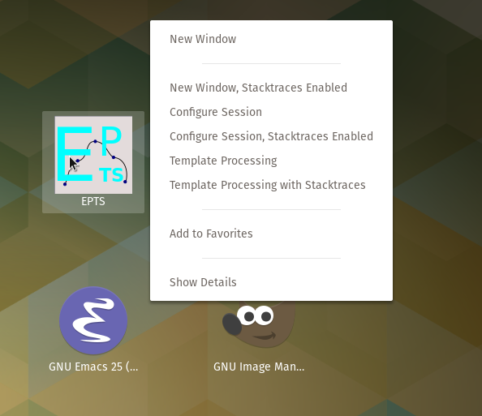</CENTER>
<BR>
These actions behave as follows:
<UL>
  <LI><B>New Window</B> This opens a new EPTS window and is equivalent to
    the default behavior (double clicking the icon).
  <LI><B>New Window, Stacktraces Enabled</B>. This opens a new EPTS
    window and is equivalent to the default behavior but with stack traces
    enabled, which prints additional information in some cases when
    errors occur.
  <LI><B>Configure Session</B>. This opens a dialog box that allows
    the user to configure a new session. The user can optionally save
    the session configuration in a session-configuration file. Unless
    the user cancels the operation, this option effectively sets the
    appropriate command-line options and uses those.
  <LI><B>Configure Session, Stacktraces Enabled</B>. This is equivalent
    to the configure-session action, but with stack-traces enabled.
  <LI><B>Template Processing</B>. This opens a dialog box for setting
    up template-related options and saving them in a template-processing
    file.
  <LI><B>Template Processing with Stacktraces</B>. This is equivalent
    to the template-processing action but with stack-traces enabled.
</UL>
<P>
For the case of an image file, or when a saved EPTS file exists (one
whose extensions are <CODE>eptc</CODE>, <CODE>epts</CODE>, or
<CODE>eptt</CODE>), a GNOME file manager can be used to start EPTS. For
example, the following figure shows a file-manager window:
<BR><BR>
<CENTER>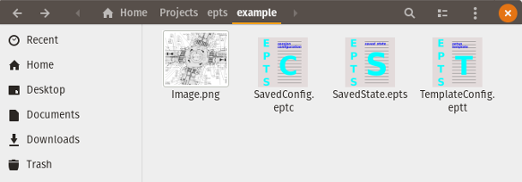</CENTER>
<BR>
The procedure for opening these files depends on the file type:
<UL>
  <LI> For the EPTS files (the last three in left to right order),
    EPTS will start by double-clicking one of these files.
  <LI> For the PNG file, or any other image file recognized by Java,
    position the mouse over the file and click the right mouse button.
    A popup-window will appear with various options. Select
    "Open With Other Application":
    <BR><BR>
    <CENTER>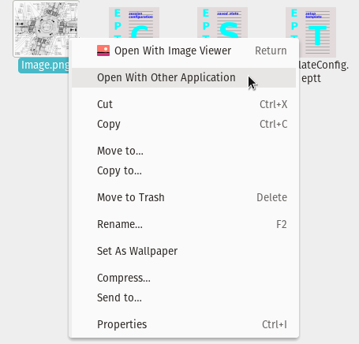</CENTER>
    <BR>
    Then click this selection. A <CODE>Select Application</CODE> window
    will appear:
    <BR><BR>
    <CENTER>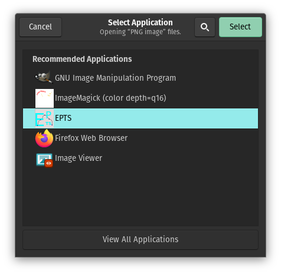</CENTER>
    <BR>
    Move the mouse pointer to select EPTS and click the left mouse
    button.
</UL>


How EPTS should be started in order to create a new session is task
dependent.  Several use cases are shown in the following subsections.

<H3><A name="imageBackground">Background images from files</A></H3>

The typical way of setting up EPTS to display a background image is to
either start EPTS with no arguments (for example, by double-clicking
the EPTS icon), or following the procedure above to open an image file
using EPTS. EPTS will then start and display a file-chooser dialog
requesting an input file if an input file was not provided. After an
image file is chosen, EPTS will continue by displaying a window
containing the image.  If no image is selected, EPTS will ask for an
image size and create a blank image of that size.

In some unusual cases, one might use the <B>Configure Session</B>
desktop action. This will allow one to request additional code bases
to support additional image formats. In atypical cases, one might also
want to change the memory allocated to the Java virtual machine.
If additional image formats are used frequently, the code bases and
property definitions needed for these formats can be placed in the
configuration files used by the <CODE>scrunner</CODE> command.
When the <B>Configure Session</B> desktop action is used, it will
display a dialog box. One will typically click on the
<CODE>Set Input File</CODE> button shown in the <CODE>start</CODE> pane
(the pane initially selected when the dialog box is displayed), and use
a file chooser to pick an image file.  Alternatively one can type the
image-file name, or a URL, into the <CODE>Input File</CODE> field.
One can also add options supported by the <CODE>java</CODE> command.

<H3><A name="scriptBackground">Background images from scripts</A></H3>

One of the design goals for EPTS is to simply creating animations using
the BZDev class library's package <CODE>org.bzdev.anim2d</CODE>. Manuals
describing this software is listed in the
<A href="#guides">Additional Documentation</A> section below.  To set
up EPTS for this case, use the <B>Configure Session</B> desktop action:
<BR><BR>
<CENTER>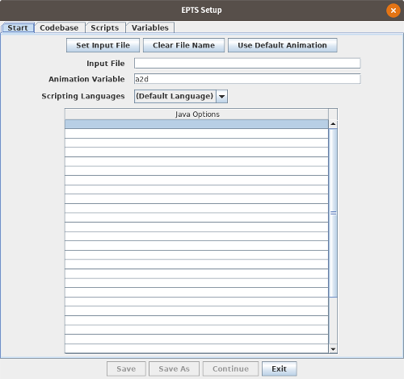</CENTER>
<BR>
One may have to select a scripting language if additional languages are
available, but the default, ECMAScript, is always available and
is the preferred choice.  The default value for the scripting-language
variable representing an animation is <CODE>a2d</CODE>, but this can
be changed if desired.

The next step is to bring up the <CODE>Scripts</CODE> pane using the tab
on the top of the of the dialog box, and insert names of the files
contains scripts that should be run in the table that makes up most of
this pane (these scripts are run in the order shown):
<BR><BR>
<CENTER>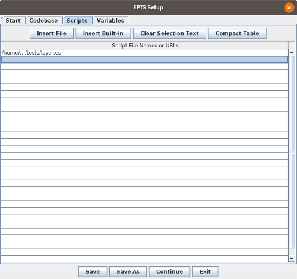</CENTER>
<BR>
The <CODE>Insert File</CODE> button can be used to display a file
chooser that will insert the selected file at the selected row in the
table.  If scripting-language variables are needed, the
<CODE>Variables</CODE> pane can be used. This allows one to specify
the name of a variable, its type, its value, and units for the value
(units are used when the value is a real number). Some scripts can be
configured by a user, and allow the user to define various values to
control their appearance (for example, to set line thicknesses). Once
done, the final step is to optionally save the configuration and then
push the <CODE>Continue</CODE> button.  EPTS will then close the
dialog box and open a window with the image the script created.

Regardless of what else is done (such as creating paths), one should
configure graph-coordinate space.  The procedure is as follows:
<OL>
  <LI> Type <B><CODE>ALT-I</CODE></B> (do not use the shift key) to measure
    a distance in units of points between two points whose "real world"
    distance is known. The distance will be automatically copied to the
    system clipboard.
  <LI> Open the <CODE>File</CODE> menu item <CODE>Configure GCS</CODE>
    (or type the sequence <B><CODE>ALT-F</CODE></B> followed by
    <B><CODE>C</CODE></B>)  to open a dialog box for configuring
    graph coordinate space.
  <LI> Copy the measured distance in the the <CODE>User-Space Distance</CODE>
    text field.
  <LI> Set the GCS distance field to the known "real-world" distance and,
    if necessary, supply units.  The value will be converted to meters.
  <LI> Close the dialog box by pushing the <CODE>OK</CODE> button.
</OL>
After completing this step and optionally creating some paths, a
saved-state file should be created using the <CODE>Save</CODE> or
<CODE>Save As</CODE> menu items in the <CODE>File</CODE> menu.
Saved-state files must have the file-name extension <CODE>epts</CODE>.
<P>
To restart a saved sessions, run EPTS with the saved file as its
argument or double-click on the saved-state file's icon in a file-manager
window.

<H3><A name="enhancedBackground">Enhancing a background</A></H3>

Scripts can also be used to enhance a background image, whether
created using an image file or by running other scripts. The first
step is to create a session-configuration file (e.g., by using the
<B>Configure Session</B> action). In this case, the input file will
be a saved-state file with the file-name extension <CODE>epts</CODE>
(e.g., test.epts):
<BR><BR>
<CENTER>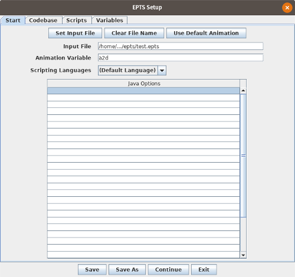</CENTER>
<BR>
When the input file name has an <CODE>epts</CODE>
extension, the <CODE>Scripts</CODE> pane will be enabled and one can
use this pane to add scripts.  The button <CODE>Insert Built-in</CODE>
will allow one to use predefined scripts:
<BR><BR>
<CENTER>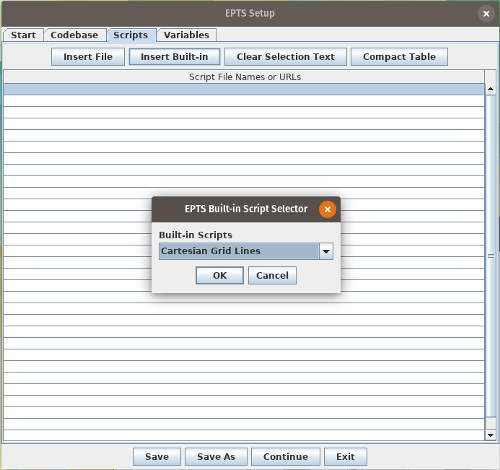</CENTER>
<BR>
One of these will overlay
a rectangular coordinate grid. While there are defaults, one can set
scripting-language variables to control the grid's appearance. These
are set using the <CODE>Variables</CODE> pane:
<BR><BR>
<CENTER>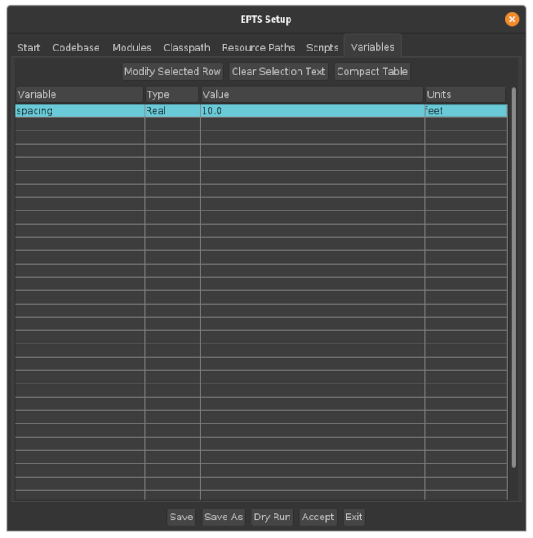</CENTER>
<BR>
In this example, the Cartesian-coordinate script
<CODE>resource:grid</CODE> uses a variable named <CODE>spacing</CODE>
to set the grid spacing. The type of the value is <CODE>Read</CODE>,
which provides some syntax checking for the value.  When the value
represents a distance, the BZDev animation package and some related
class libraries use SI units, with distance measured in meters.  One
can specify other units, <CODE>feet</CODE> in this example, and the
value will automatically be converted to meters before it is used.
<P>
The session-configuration should be saved if the configuration will be
used later. Such saved files must have the
extension <CODE>eptc</CODE>.  To restart EPTS with a saved session
configuration, run EPTS with the session-configuration file as its
argument or double-click on the session-configuration file's icon in a
file-manager window.

<H3><A name="templateSetup">Configuring templates</A></H3>

EPTS uses templates to export data in various formats.  Templates
exist for creating SVG files, for listing paths' control points in
formats that can be used by the scripting-language API for the
BZDev animation package, and for providing useful information about
paths such as path lengths and the area enclosed by closed paths.
Templates are describe in detail in the section
<A href="#templates">Templates</A>, and that section can be summarized
as follows:
<UL>
  <LI> Templates contain text, ordinary directives (called simply
    directives), and iterative directives.  If a directive is used by
    not defined, its value defaults to an empty string.
  <LI> A directive is a name with an associated value.
  <LI> An iterative directive is a name with an associated list. Each
    item in the list defines its own directives. An iterative directive
    will bracket a region of a template, and that region will be repeated
    using one set of directives for each element in the list.
</UL>
There are three types of templates: table templates, path-iteration
templates and an SVG template (which is a special case).
<P>
One can configure templates by using the EPTS <B>Template Processing</B>
desktop action. This will open a dialog box containing six panes, only
the first of which will be enabled:
<BR><BR>
<CENTER></CENTER>
<BR>
These panes are used as follows.
<UL>
  <LI> The <B><CODE>Start</CODE></B> pane. One should first choose the
    type of template out of the choices <CODE>SVG</CODE>,
    <CODE>Table Template</CODE>, and <CODE>PI Template</CODE> (for
    path-iterator template). One then can choose an appropriate template
    (as long as the <CODE>Choose Built-in Template</CODE> checkbox is
    checked, the <CODE>Choose</CODE> button next to the
    <CODE>Template File or URL</CODE> text field will show templates of the
    appropriate type). Neither this text field nor the checkbox are enabled
    for SVG templates.  One must also provide a saved-state file. The
    <CODE>Map File</CODE> text field is used only for table templates
    that use an <CODE>atype</CODE> directive (none of the built-in
    templates use this directive). Once this data is entered, pushing
    the <CODE>Accept Template Options</CODE> button will enable the
    appropriate panes.
  <LI> The <B><CODE>Template Defs</CODE></B> pane. This pane is enabled
    when the template is not a built-in template and allows one to define
    additional directives that a user-provided template may need. The
    table provided by this pane has three columns:
    <UL>
      <LI><B><CODE>Test Directive</CODE></B>. This is an iterative
	directive with only one iteration and does not override or temporarily
	add any	directives. Text inside the iteration will appear once. It
	is a conditional statement that is in effect when the directive's
	value is not an empty string. The directive may, however, include
	whitespace.
      <LI><B><CODE>Directive</CODE></B>. This defines a directive's name.
      <LI><B><CODE>Value</CODE></B>. This defines a directive's value.
    </UL>
  <LI> The <B><CODE>Add Paths</CODE></B> pane. This pane initially displays
    the paths defined by the saved state.  One can add new paths that
    are concatenations of these initially displayed paths.  When a new
    path is added, its list of subpaths will be empty. clicking on a
    row in the subpath table will provide a menu with the names of the
    subpaths that may be added:
    <BR><BR>
    <CENTER>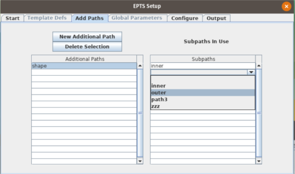</CENTER>
    <BR>
  <LI> The <B><CODE>Global Parameters</CODE></B> pane. The use of this
    pane is optional and the fields it displays are dependent on the
    template type. It allows one to set a few directives or options.
  <LI> The <B><CODE></CODE>Configure</B> pane. This pane displays the
    paths defined in the saved-state file and any paths added using
    the <CODE>Add Paths</CODE> pane.  There is a checkbox next to each
    path and that checkbox should be selected for the paths that will
    be included in the output.  For table templates and the SVG template,
    when a path is selected, various parameters for that path will be
    displayed. For example,
    <BR><BR>
    <CENTER>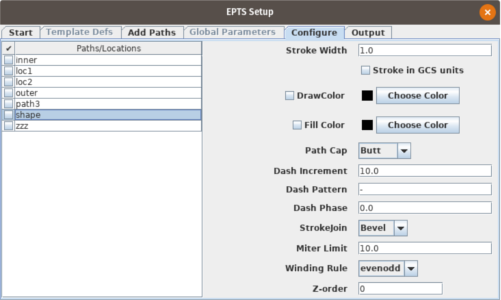</CENTER>
    <BR>
    The <CODE>Stroke Width</CODE> parameter and the
    <CODE>Stoke in GCS units</CODE> checkbox will be used when
    the <CODE>DrawColor</CODE> checkbox is selected and will be
    ignored if this checkbox is not selected.  Similarly, the remaining
    parameters will be used when the <CODE>Fill Color</CODE> checkbox
    is selected and will be ignored when this checkbox is not
    selected.
  <LI> The <B><CODE>Output</CODE></B> pane. This option allows one to
    choose an output file.  There are also buttons for saving the
    template configuration (the configuration file's file-name
    extension must be <CODE>eptt</CODE>) and for generating output.
    If the file name is "-", the output will appear on standard output.
    This is an inappropriate choice when EPTS is started using a window
    system as there is no terminal available to display the output. It is
    useful if EPTS is started from the command line.
</UL>

<H2><A name="usingEPTS">Using EPTS</A></H2>

Because EPTS is designed to support a specific set of tasks, there are
a large number of <A href="#shortcuts">keyboard shortcuts</A>.  It
also uses a template processor that makes it relatively easy to
display paths textually in a variety of formats, including
user-defined formats.  Command-line options are used with templates
and make it easy to use EPTS as part of a 'build' environment (e.g.,
Java programs such as ANT or the traditional Unix/Linux use of
Makefiles).
<P>
EPTS makes use of three coordinate systems, one indirectly:
<UL>
  <LI> Java user-space coordinates, which is display-centric where
    distances are in units of "points" (1/72 inches) and where the
    positive X direction points left and the positive Y direction
    points down. Without any explicit scaling, the JRE (Java Runtime
    Environment) will scale images so that one pixel covers a square
    that is 1 point by 1 point in size. This may represent several
    pixels on a display or output device (e.g., a high-resolution
    printer).  User-space coordinates are floating point numbers.  As
    a result, if an output device contains 4 pixels for each 1x1 point
    square, and the image is scaled down by a factor of 2, there will
    be no degradation in image quality.
  <LI> image space coordinates, in which one unit corresponds to a
    pixel of an image. If an image is used directly, one pixel in the
    image will take up 1 unit in user space. When scripts are used
    to create the background image, however, an image can be scaled
    and incorporated in the background image. Image-space coordinates,
    however, are not used for any other purposes and can be ignored
    except when images are being added to a background by using a script.
    The procedure for adding an image using a script is provided in the
    BZDev library documentation for the package
    <CODE>org.bzdev.anim2d.AnimationLayer2DFactory</CODE> (the
    <A href="#guides">Additional Documentation</A> section provides citations
    to the documentation.
  <LI> GCS (Graph Coordinate Space) coordinates, in which distances are
    measured in application-specific coordinates (e.g., meters) and
    where the positive X direction points left and the positive Y
    direction points up. EPTS allows distances to be specified in either
    custom units or meters.  If custom units are not used, all other
    units will be converted to meters.  Graph coordinate space is define
    by the BZDev class library, specifically the class
    <CODE>org.bzdev.graphs.Graph</CODE>.
</UL>
EPTS will display an image and allow one to overlay this image with
points and B&eacute;zier curves, expressing their locations and control
points in graph coordinate space units. It will also allow one to measure
the distance between points in either image space or graph coordinate space
units.

<H1><A name="menus">The menu bar</A></H1>

The EPTS window provides a menu bar containing 6 menus:
<UL>
  <LI> the <A HREF="#fileMenu"><CODE>File</CODE></A> menu.
  <LI> the <A HREF="#editMenu"><CODE>Edit</CODE></A> menu.
  <LI> the <A HREF="#zoomMenu"><CODE>Zoom</CODE></A> menu.
  <LI> the <A HREF="#measureMenu"><CODE>Measure Distance</CODE></A> menu.
  <LI> the <A HREF="#toolsMenu"><CODE>Tools</CODE></A> menu.
  <LI> the <A HREF="#helpMenu"><CODE>Help</CODE></A> menu.
</UL>
These menus are described below. The following figure shows the menus
above a minimally-sized canvas:
<BR>
<BR>
<CENTER>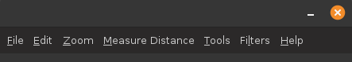</CENTER>
<BR>

<H2><A name="fileMenu">The File menu</A></H2>

The <code>File</code> menu contains the following items:
<UL>
  <LI><code>Quit</code>. Choosing this menu item causes the program to
    exit.
  <LI><A name="save"><code>Save</code></A>. Choosing this menu item
    causes the program to be saved. This option will request a file
    name unless the first file-name argument is an EPTS saved-state
    file.
  <LI><code>Save As</code>. Choosing this menu item causes the program to
    be saved with a new file name. This new file will become the default
    file name for the <code>Save</code> menu item.
  <LI><A name="config"><code>Configure CGS</code></A>. Choosing this
    menu item will open a dialog box for configuring graph coordinate
    space. This dialog box allows one to set a distance in user-spaced
    units and the corresponding distance in graph coordinate space
    units. The units for graph coordinate space are either custom
    units (arbitrary units defined by the user) or meters. If another
    unit is specified, it's value will be converted to
    meters. Canceling the dialog box will restore the values to those
    that existed just before the dialog box was opened. Users may
    specify a reference point (<CODE>LOWER_LEFT</CODE>,
    <CODE>LOWER_CENTER</CODE>, <CODE>LOWER_RIGHT</CODE>,
    <CODE>CENTER_LEFT</CODE>, <CODE>CENTER</CODE>, <CODE>CENTER_RIGHT</CODE>,
    <CODE>UPPER_LEFT</CODE>, <CODE>UPPER_CENTER</CODE>, or
    <CODE>UPPER_RIGHT</CODE>) and the graph-coordinate-space
    coordinates for the reference point in either custom units or
    meters.  When explicitly configured, the coordinates for the
    reference point will typically be (0.0, 0.0).  When scripting is
    used, The reference point is always set to <CODE>LOWER_LEFT</CODE>
    and the reference point coordinates will be set to match the
    coordinates used by the script. For example, when configuring EPTS
    for an image, the dialog box shown below sets the scale factors so
    that a distance of 40.0 in image space corresponds to a distance
    of 12 feet (converted to meters) in graph coordinate space:
    <BR>
    <BR>
    <CENTER>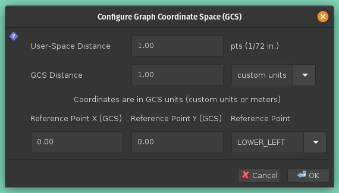</CENTER>
    <BR>
    The coordinates - (0.0, 0.0) in the figure above - are in graph
    coordinate space and correspond to the lower-left corner of an
    image, with the positive X axis pointing towards the lower-right
    corner of the image and the positive Y axis pointing towards the
    upper-left corner of the image.
  <LI><code>Print Table</code>. Choosing this menu item will open
    a 'print' dialog box to print the table.
</UL>

<H2><A name="editMenu">The Edit menu</A></H2>

The <code>Edit</code> menu contains the following items:
<UL>
  <LI><B><CODE>Undo point insertion</CODE></B>. This essentially removes
    the last row (two rows for a closed path) from the table. If
    a previous path is extended via the <CODE>Tools</CODE> menu's
    <CODE>Add to B&eacute;zier Path</CODE> item, that path will be
    moved to the end of the table. While creating a path, this option
    undoes the last change.
  <LI><B><CODE>Copy table as ECMAScript</CODE></B>. This option copies the
    table to the clipboard after formatting it as a series of
    ECMA script statements.
  <LI><B><CODE>Set the location format</CODE></B>. This is a list of
    radio buttons:
    <UL>
      <LI><B><CODE>Location as (X,Y)</CODE></B>.
      <LI><B><CODE>Location as x: X, y: Y}</CODE></B>.
      <LI><B><CODE>Location as {x: X, y: Y}</CODE></B>.
      <LI><B><CODE>Location as V = {x: X, y: Y};</CODE></B>.
    </UL>
    The format is that shown by the menu-item name, excluding the
    string "Location as ", where X is the X coordinate of the point,
    Y is the Y coordinate of the point, and V is the name of a
    variable to which the object "{x: X, y: Y}" will be assigned.
  <LI><A name="dragImage"><CODE>Drag-Image Mode</CODE></A>. This menu
    item determines if dragging the mouse drags the image..  While one
    can alternatively press the ALT key and then press the primary
    mouse button, some window systems have shortcuts that process this
    combination and do not pass it on to applications. The image will
    not be dragged when this mode is in effect and a distance is being
    measured or a path (or point) is being created or modified.
</UL>

<H2><A name="zoomMenu">The Zoom menu</A></H2>
The <code>Zoom</code> menu contains the following items:
<UL>
  <LI><B><CODE>Reset</CODE></B>. This option resets the image size so that
    one pixel on the image takes up one point on the screen.
  <LI><B><CODE>Zoom in</CODE></B>. This option increases the zoom factor by a
  factor of 2.
  <LI><B><CODE>Zoom out</CODE></B>. This option decreases the zoom factor by a
    factor of 2.
</UL>
The remaining items represent specific zoom factors numerically. The
number of these entries depends on the image size.

<H2><A name="measureMenu">The Measure-Distance menu</A></H2>
The <CODE>Measure Distance</CODE> menu contains the following items:
<UL>
  <LI><B><CODE>Image space distance</CODE></B>. This option measures distances
    in image-space units. This is particularly useful just before using
    the <CODE>File</CODE> menu's <CODE>Configure GCS</CODE> option as the
    value measured will be automatically copied to the clipboard and
    can be pasted into the user-space-distance field which the
    <CODE>Configure GCS</CODE> dialog box will show.
  <LI><B><CODE>GCS distance</CODE></B>. This option measures distances in graph
    coordinate space units. Until the <CODE>File</CODE> menu's
    <CODE>Configure GCS</CODE> option is used, the ratio of GCS distances
    to the corresponding image-space distances is 1 to 1.
</UL>
When either of these options is selected, the cursor will change to a
cross-hair cursor.  One should then click on a starting point, followed by
and ending point. Text will appear above the image providing instructions.
In both cases, the distance measured will be displayed an automatically
copied to the system clipboard so it can be pasted into any window
or component that will accept text.

<H2><A name="toolsMenu">The Tools menu</A></H2>

The <CODE>Tools</CODE> menu allows points and curves to be created and
displayed in textual form. This menu contains the following items:
<UL>
  <LI><B><CODE>Show PointTable</CODE></B>. Show a table containing
    each location and curve, including the curve segments, with
    control points for quadratic and cubic B&eacute; segments and with
    knots for spline segments. The only points contained in this table
    are those created with a variable name.  All curves are included
    because all of the curves have a variable name. As an example
    corresponding to an <A href="#drawing2">example shown below</A>, a
    table for a cubic B&eacute;zier curve with two control points is
    the following:
    <BR>
    <BR>
    <CENTER>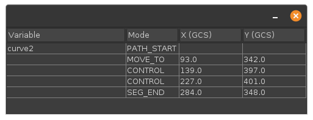</CENTER>
    <BR>
  <LI><B><CODE>Create a Point</CODE></B>. This option will create a new,
    isolated point. It will appear in the table if given a name.
    A description of this point, in a format set by <CODE>Edit</CODE>
    menu options, will be copied to the clipboard. Selecting an option
    other than the one specifying a variable name will result in the
    point not appearing in the table. If a variable name is requested
    and the variable name is left as an empty string, a new variable
    name will be generated, starting the string "pt" and followed by
    a number (e.g., <code>pt7</code>.)
  <LI><B><CODE>Create a B&eacute;zier Path</CODE></B>. A new path will be
    created. A dialog box will ask for a variable name for the path,
    and the cursor will change to a cross-hair cursor, and the user
    should select the initial point on the curve.  The point type
    shown in the table is <CODE>MOVE_TO</CODE> - only one such point
    is allowed for each curve. If a variable name is requested and the
    variable name is left as an empty string, a new variable name will
    be generated, starting the string "path" and followed by a number
    (e.g., <CODE>path24</CODE>.)
  <LI><B><CODE>Add to a B&eacute;zier Path</CODE></B>. The user will be asked to
    select the name of a path, and adding points to the path will then
    be possible.
  <LI>A series of radio buttons specifying the type for
      the next point along a curve:
    <UL>
      <LI><B><CODE>Spline Point(s)</CODE></B>. This option indicates that the
	next point clicked will be a knot on a segment described by a
	spline. The path will be a smooth path going through each of
	the specified knots. While the spline is actually a sequence
	of cubic B&eacute;zier curve segments, the inner control
	points for those segments are not shown as these are
	implicitly computed. Spline points are shown as solid black
	circles with white borders. For example, the following figure
	shows an EPTS window containing a closed curve consisting of
	spline points (how to close a curve is described below):
	<BR>
	<BR>
	<CENTER>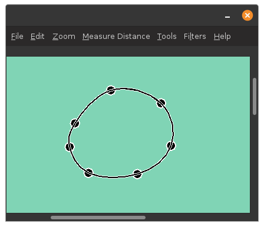</CENTER>
	<BR>
      <LI><B><CODE>Control Point(s)</CODE></B>. This option indicates that
	the next point is a control point. There can be at most two
	control points in a row. Control points are as solid
	black squares with white borders. For example, the following
	figure shows an EPTS window containing an open curve with two
	internal control points:
	<BR>
	<BR>
	<A name="drawing2"><CENTER>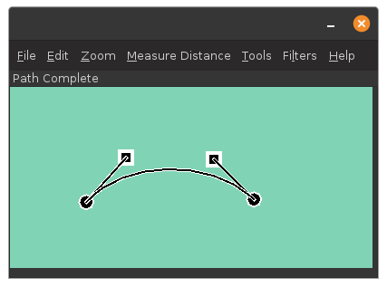</CENTER></A>
	<BR>
	<BR>
	In the figure, the tangent lines leading to the control points
	shown as squares are not part of the curve itself.
      <LI><B><CODE>End Curve/Line Segment</CODE></B>. This option indicates
	that the next point is the end of a segment. A segment with no
	intermediate control or spline points is a straight-line segment.
	Like spline points, the end-of-segment points are shown as
	black circles with white borders.
    </UL>
  <LI>Two menu items provide Options for ending a path:
    <UL>
      <LI><B><CODE>Loop</CODE></B>. The path will be closed by connecting the
	last point entered to the first point on the path.  A loop
	must have an end-of-segment point as the last point entered
	unless all the points except the first point have a type
	equal to <CODE>SPLINE</CODE>.
      <LI><B><CODE>Path Ended</CODE></B>. This option ends the current path
	without closing it.
    </UL>
  <LI>Three Menu items provide explicit coordinates by opening a dialog
    box with fields containing various coordinates, lengths, and angles:
    <UL>
      <LI><B><CODE>Set X-Y Coordinates (GCS)</CODE></B>. This menu item
	will open a dialog box that will ask for the X and Y
	coordinates of a point specified in GCS units:
	<BR><BR>
	<CENTER>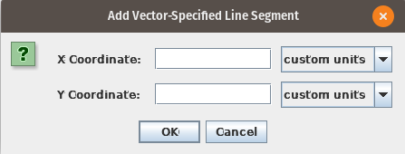</CENTER>
	<BR>
	It is equivalent to positioning the mouse at that point and
	clicking the left-mouse button when the cross-hair cursor is
	displayed.  Both coordinate fields have an adjacent pull-down
	menu that allows units to be specified.
      <LI><B><CODE>Add Vector</CODE></B>. This menu item will open a
	dialog box that will ask for a length and an angle:
	<BR><BR>
	<CENTER>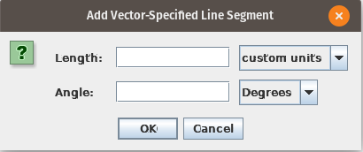</CENTER>
	<BR>
	The angle is measured counterclockwise with 0 corresponding to
	the direction of the positive X axis. A straight-line segment
	will be added from the current point (the last point entered
	along the curve) to a point whose distance from the current
	point is given by the <B><CODE>length</CODE></B> field and
	whose direction is given by the <B><CODE>Angle</CODE></B>
	field. Both fields have adjacent pull-down menus that allow
	units to be specified (distance units for the
	<B><CODE>length</CODE></B> field and angular units
	(degrees or radians) for the <B><CODE>Angle</CODE></B> field.
      <LI><B><CODE>Add Arc</CODE></B>. This menu item will open a
	dialog box that will ask for a radius, angle, angle direction,
	and arc-accuracy level:
	<BR><BR>
	<CENTER>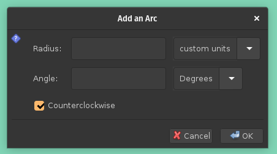</CENTER>
	<BR>
	The <B><CODE>Radius</CODE></B> field
	provides the radius of the arc in GCS units.
	The <B><CODE>Angle</CODE></B> field provides the angular
	extent of the arc, with positive value indicating that the
	arc's tangent at the current point is parallel to the tangent
	vector at the current point and a negative value indicating
	that the arc's tangent at the current point is anti-parallel to
	the the tangent vector at the current point.
	The <B><CODE>Counterclockwise</CODE></B> checkbox indicates
	whether the arc, when the angle is positive, turns clockwise
	or counterclockwise in graph coordinate space (counterclockwise
	is defined as turning from the positive X axis towards the positive
	Y axis). This checkbox determines the position of the circle
	containing the arc regardless of the sign of the angle. Finally,
	a pull-down menu indicates the accuracy of the arc.  A circular
	arc is approximated by a sequence of cubic B&eacute;zier curves
	and the arc accuracy sets the maximum angular extent of each.
	When the arc accuracy is set to 1 (the default), the maximum
	angular extent for a cubic B&eacute;zier curve segment is 90
	degrees. Increasing the arc accuracy by 1 halves this angle.
    </UL>
</UL>
Menu items that are not applicable are disabled.

<H2><A name = "filtersMenu">The Filters menu</A></H2>
The <CODE>Filter</CODE> menu lets the user define filters that, when
applied, will configure which paths and locations are displayed.
Two menu items are always present:
<UL>
  <LI><B><CODE>New Filter</CODE></B>. This option creates new filters.
    Each filter has a name that will appear in the Filter menu below
    the first two menu items.
   <LI><B><CODE>Clear</CODE></B>. This option turns filtering off.
</UL>
<P>
When a new filter is created or when an existing filter's menu item is
clicked, a dialog box will appear that allows the filter to be configured.
Both the filter as a whole and individual paths and locations provide a
mode that determines how entries are filtered.  The choices for a mode
are the following:
<UL>
  <LI><B><CODE>Default</CODE></B>. No changes are made for a path or location
  <LI><B><CODE>Selectable</CODE></B>. A path or location is marked as
    selectable. When drawn, both paths and control points are drawn.
  <LI><B><CODE>Drawable</CODE></B>. Paths are drawn but control points are
    not drawn.
  <LI><B><CODE>Invisible</CODE></B>. The path or location is not drawn.
</UL>
After a filter is configured, there are three choices:
<UL>
  <LI><B><CODE>Apply</CODE></B>. The filter will be applied.
  <LI><B><CODE>Save Only</CODE></B>. The filter will be saved but not applied.
  <LI><B><CODE>Delete</CODE></B>. The filter will be deleted, thus removing
    it from the Filter menu.
</UL>
<P>
When a filter is applied, the mode for the filter as whole will first be
applied to each path and location. Then the modes for individual paths are
applied. Typically, most of the modes for individual paths and locations will
be set to <CODE>Default</CODE>, so that the filter's overall mode will be
used, and a few will be set to different values.
The modes are initially set to <CODE>Default</CODE> for individual
paths and locations. A filter's overall mode is initially set
to <CODE>Invisible</CODE>.
<P>
When a filter has been applied, the menu title will change from
<B><CODE>Filters</CODE></B> to <B><CODE>*Filters*</CODE></B>. Clearing
the filters will restore the title to <B><CODE>Filters</CODE></B> and
make all paths and locations selectable.

<H2><A name ="helpMenu">The Help menu</A></H2>
The <CODE>Help</CODE> menu provides several ways of viewing a
manual. This menu contains the following items:
<UL>
  <LI><B><CODE>Manual</CODE></B>. This option shows the manual in a window
    that contains two panes: one with a table of contents and the
    other with the manual itself.
  <LI><B><CODE>Print Manual</CODE></B>. This option opens a printer dialog
    box and allows the user to produce a printed copy of the manual.
  <LI><B><CODE>Browser</CODE></B>. This option opens the system's default
    browser and displays the manual in it. As a side effect, an embedded
    web server will also be started, and that web server can be accessed
    by other users.
  <LI><B><CODE>Port for Manual`s Webserver</CODE></B>. When a TCP port
    was not specified on the command line, this option gives the user
    a chance to change the port number until the web server is started.
  <LI><B><CODE>Start Manual's Webserver</CODE></B>. This option starts
    the web server used to show the on-line manual. While EPTS can display
    the manual directly, a web server is useful when a nearby computer
    can be used to display the manual and EPTS is not installed on that
    computer.  If the port number is set to 8080 the corresponding URL
    will be &lt;<CODE>http://HOSTNAME.local:8080/</CODE>&gt;, where
    HOSTNAME is the name of the computer on which EPTS is installed.
    As a use case, suppose two people are in a coffee shop and are
    using EPTS, which is installed on one computer. Starting the EPTS web
    server will allow the manual to be displayed on the other computer
    while the one on which EPTS is installed will be used to run the
    EPTS application.
</UL>

<H1><A name="mouse">Using the mouse</A></H1>

There are several combinations of mouse buttons and modifier keys that
may be used, mostly to create or modify points (locations, control
points, segment ending points, or spline points), all shown as filled
circles overlayed on the image):
<UL>
  <LI> ALT key and primary mouse button pressed. The image can be
    dragged, and scrollbars will move in the opposite direction to
    that in which the cursor moves. The image, however, cannot be
    dragged beyond the range that the scrollbars support. If a window
    system has a short cut that uses the same key-mouse combination,
    the window system's behavior may occur instead. In this case, use
    the <A href="#dragImage">drag-image mode</A> Edit menu option to
    put EPTS into the desired state.
  <LI> Control Key and primary mouse button pressed. This combination
    is used while creating a path or extending a path.  The mouse must
    be positioned over a point when the left button is pressed. The
    point can then be dragged to a new location.  The selected point
    will have a circle around it. If a window system has a short cut
    that uses the same key-mouse combination, the window system's
    behavior may occur instead.
  <LI> No keys but the primary mouse button clicked. When a cross-hair
    cursor is shown, a point will be added, either an isolated point
    or an additional point along a curve. When the normal 'arrow' cursor
    is shown, this option allows one to select or deselect a point.
    A point is selected when the mouse is clicked while positioned over
    it. A point is deselected by clicking on an area of the image that does
    not contain a point. When a point is selected, a ring is drawn around it.
  <LI> A popup menu is requested. The key sequence is system dependent.
    On X-windows systems, one typically presses the button on the
    opposite side of the mouse from the primary button.
    In the Java look and feel, clicking the this mouse button will make
    the popup menu stay up. Popup menus are context sensitive. They can
    appear when a point has been selected or when a cross-hair cursor
    is shown and there is a previous point to modified.
</UL>
In most configurations, the primary mouse button is the left mouse
button. Windows systems, however, may give the user the option of
changing this.

<H2><A name="popup">Popup menus</A></H2>

There are two popup menus that can be displayed. As stated above,
these are context-sensitive.

When a path is being created or extended, and a point has been added,
a popup menu is available that will allow one to change the type of
the last point entered.  The options are to change a mode to
<CODE>SEG_END</CODE>, <CODE>SPLINE</CODE>, or <CODE>CONTROL</CODE>.
Only the options that are applicable given the types of the
previous points on the path will be enabled. For example:
<BR>
<BR>
<CENTER>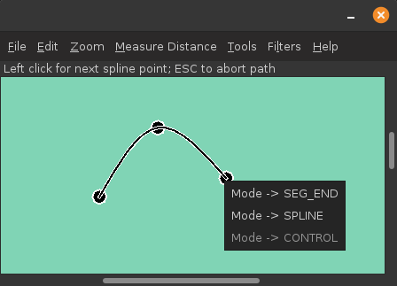</CENTER>
<BR>
<P>
When a path is not being created or extended, but a point on a path
has been selected, a popup menu is also available. This menu provides
the following options:
<UL>
  <LI><B><CODE>Delete Point</CODE></B>. This option deletes the selected point
    from the path.
  <LI><B><CODE>Change Point Type</CODE></B>. This option allows one to change
    the type of the selected point. The choice types is dependent on
    the types of the surrounding points.
  <LI><B><CODE>Insert Before Point</CODE></B>. This option allows one to insert
    a new point into a path before the selected point.
  <LI><B><CODE>Insert After Point</CODE></B>.  This option allows one to insert
    a new point into a path after the selected point.
  <LI><B><CODE>Break Loop</CODE></B>. This option turns a closed path into an
    open path.
  <LI><B><CODE>Extend Path</CODE></B>. This option allows one to add new
    points to a path. It will also re-order the table (for reasons
    of convenience, when a path is extended, it is moved to the end
    of the table).
</UL>
The only popup-menu items that are enabled are those that are applicable
given the current state of the curve. For example,
<BR>
<BR>
<CENTER>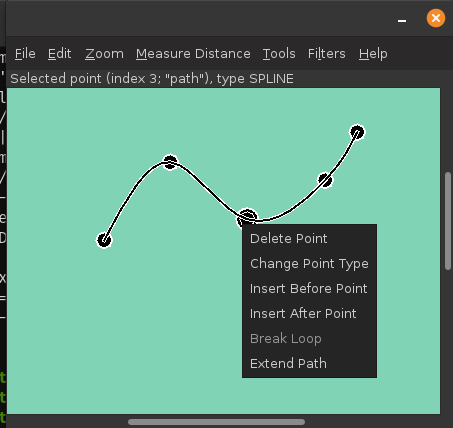</CENTER>
<BR>
Points that are selected are denoted by another circle or square
surrounding the selected point.

<H1><A name="shortcuts">Keyboard shortcuts</A></H1>

Two shortcuts apply for both the EPTS sessions (these files have
the <CODE>epts</CODE> extension) and for dialog
boxes used to set up saved-configuration files and template-processing
files (these have the <CODE>eptc</CODE> and <CODE>eptt</CODE> file-name
extensions respectively):
<UL>
  <LI> Control-Q. This will cause EPTS to terminate.
  <LI> Control-S. This will save the current state or configuration
    displayed in window or dialog box. If the current session was restored
    from a saved state or configuration, the corresponding file will be
    replaced.
</UL>
The remaining shortcuts apply to saved states.

Some saved-state shortcuts apply regardless of the current mode:
<UL>
  <LI> Control-P. This will print the table.
  <LI> Control-Z. This is an "undo" operation.
  <LI> Control-Minus. Zoom out.
  <LI> Control-Plus.  Zoom in.
  <LI> Control-0. Restore the zoom factor to the original size. (1 to 1).
  <LI> Control-T. Display the table in a separate window.
  <LI> Control-Right-Arrow. Move the horizontal scroll bar to the right.
  <LI> Control-Left-Arrow. Move the horizontal scroll bar to the left.
  <LI> Control-Up-Arrow. Move the vertical scroll bar up.
  <LI> Control-Down-Arrow. Move the vertical scroll bar down.
  <LI> Alt-A. Append points to a B&eacute;zier path.
  <LI> Alt-D. This toggles whether
    <A href="#dragImage">drag-image mode</A> is in effect, and can
    be used when a window system provides shortcuts that use the
    ALT key with the primary mouse button.
  <LI> Alt-I. Measure the image-space distance between two points.
  <LI> Alt-G. Measure the graph-coordinate-space distance between two
    points.  To provide a meaningful distance, graph coordinate space
    must be configured first. The
    <A href="#config"><CODE>Configure CGS</CODE></A> menu item allows
    graph coordinate space to be configured.
  <LI> Alt-P. Add an isolated point.  The user will be asked to supply
    a variable name that has not been used before. If that variable
    name is not provided or consists of just whitespace, a name will
    be generated.  A generated name starts with the
    string <CODE>pt</CODE> and ends with a positive integer.
  <LI> Alt-B. Add a B&eacute;zier path. The user will be asked to
    supply a variable name that has not been used before. If that
    variable name is not provided or consists of just whitespace, a
    name will be generated.  A generated name starts with the
    string <CODE>path</CODE> and ends with a positive integer.
</UL>
<P>
By contrast, some key combinations apply only when adding a point to
a path or creating an isolated point at a specific location:
<UL>
  <LI> Right-Arrow. When this key is clicked, a cross-hair cursor will
    move to the right.
  <LI> Left-Arrow.  When this key is clicked, a cross-hair cursor will
    move to the left.
  <LI> Up-Arrow.  When this key is clicked, a cross-hair cursor will
    move to up.
  <LI> Down-Arrow. When this key is clicked, a cross-hair cursor will
    move to down.
  <LI> A. When the A key is pressed (without a modifier key, regardless
    of whether the caps-lock key is in use), if a curve is being
    created and the current point is the end of a segment, a dialog box
    creating a circular arc will appear. This is equivalent to selecting
    the <B><CODE>Add Arc</CODE></B> menu item from the
    <B><CODE>Tools</CODE></B> menu.
  <LI> C. When the C key is pressed (without a modifier key, regardless
    of whether the caps-lock key is in use), the next point will be a
    control point.  If a control point is not allowed, the keystroke
    will be ignored.
  <LI> E. When the E key is pressed (without a modifier key, regardless
    of whether the caps-lock key is in use), the next point will be an
    end-of-segment point.
  <LI> L. When the L key is pressed (without a modifier key, regardless
    of whether the caps-lock key is in use), the current path will be
    ended in a loop. This option will be ignored if the last point is
    a control point or if the last point is a spline point and there is
    an end-of-segment point that is already part of the path.
  <LI> P. When the P key is pressed (without a modifier key, regardless
    of whether the caps-lock key is in use), a dialog box will appear
    that allows one to enter GCS coordinates for a point.  The behavior
    is identical to clicking the left mouse button when the cross-hair
    cursor appears over the corresponding point. This key is ignored when
    not creating a location or a point on a B&eacute;zier curve.
  <LI> S. When the S key is pressed (without a modifier key, regardless
    of whether the caps-lock key is in use), the next point will be
    a spline point. If a spline point is not allowed, the keystroke
    will be ignored.
  <LI> V. When the V key is pressed (without a modifier key, regardless
    of whether the caps-lock key is in use), if a curve is being
    created and the current point is not a control point or spline
    point, a dialog box specifying a vector to the end of the next
    segment will appear. This is equivalent to selecting
    the <B><CODE>Add Vector</CODE></B> menu item from the
    <B><CODE>Tools</CODE></B> menu.
  <LI> Z. When the Z key is pressed (without a modifier key, regardless
    of whether the caps-lock key is in use), the current path will remain
    open and will be ended.  The type of the last point will be changed to
    an end-of-segment point.
</UL>

<H1><A name="templates">Templates</A></H1>

Templates allow output files to be produced in a variety of formats.
A template is specified by using the <CODE>--template</CODE>
command-line option.  The value is either a URI or a file name.
There are a number of built-in templates that are accessible by
using a URI whose scheme is <CODE>resource</CODE>. These fit
into two categories: table templates and path-iterator templates.
Table templates represent paths as a series of points whose types
are <CODE>MOVE_TO</CODE>, <CODE>CONTROL</CODE>, <CODE>SEG_END</CODE>,
<CODE>SPLINE</CODE>, and <CODE>CLOSE</CODE>. Path-iterator templates
by contrast construct each spline along a path and then represent
the path as a sequence of <CODE>SEG_CLOSE</CODE>,
<CODE>SEG_CUBICTO</CODE>, <CODE>SEG_LINETO</CODE>,
<CODE>SEG_MOVETO</CODE>, or <CODE>SEG_QUADTO</CODE> segments, each
with 0 to 3 control points. The names for each type are the same as
the names of the corresponding <CODE>java.awt.geom.PathIterator</CODE>
constants.

To use a template, one must also specify an output file, which is done
with the <CODE>-o</CODE> command-line option.  EPTS will not provide a GUI
when templates are used. If the argument to the <CODE>-o</CODE> option
is "<CODE>-</CODE>", the output will be sent to standard output.

<H2><A name="builtins">Built-in templates</A></H2>

The built-in templates can be accessed via URLs whose protocol field
is <CODE>resource</CODE>. For convenience there is a shortcut: if
the templates option includes a colon followed by a template name,
a built-in template with that name will be used. For  example,
<BLOCKQUOTE><PRE><CODE>
      epts -o paths.js --template:ECMAScriptPaths saved.epts
</CODE></PRE></BLOCKQUOTE>
and
<BLOCKQUOTE><PRE><CODE>
      epts -o paths.js --template resource:ECMAScriptPaths saved.epts
</CODE></PRE></BLOCKQUOTE>
are equivalent. Table templates by default will produce entries for all
paths and locations. To restrict the paths or to use them in some
specialized way, the <CODE>--tname</CODE> command-line option can be used.
For example, if the <CODE>saved.epts</CODE> file in the example above includes
a path named <CODE>firstPath</CODE> and path named <CODE>secondPath</CODE>
in its table, the command
<BLOCKQUOTE><PRE><CODE>
      epts -o path.js --template:ECMAScriptPaths \
          --tname firstPath -tname secondPath saved.epts
</CODE></PRE></BLOCKQUOTE>
will include only these two paths in its output file <CODE>path.js</CODE>.
<P>
The built-in table templates are the following:
<UL>
  <LI><B><CODE>resource:distances</CODE></B>. This will print the
    distances and corresponding path parameters for those points along
    a path that are spline points or points on segment boundaries. The
    path parameters are integer-valued, and for the path parameter 0.0,
    the corresponding distance is always zero.  For paths that have
    subpaths, the distances and path parameters are those appropriate
    for each subpath.
  <LI><B><CODE>resource:ECMAScript</CODE></B>.  This will print the
    information included in the EPTS table. Each path or location is
    represented by an ECMAScript variable. For locations, the value
    assigned to the variable is an object whose properties
    <CODE>x</CODE> and <CODE>y</CODE> provide the coordinates of the
    point. If there are no <CODE>--tname</CODE> options, all paths and
    locations are included in the output; otherwise only the ones
    specified by <CODE>--tname</CODE> options are included. For paths,
    if stroke or color options are not used, the object will be an
    array of objects, each describing a control point. In this case,
    the value assigned to the variable will be an object that can be
    used to configure an instance of
    <CODE>org.bzdev.geom.SplinePathBuilder</CODE>. When the corresponding
    <CODE>--tname</CODE> option's argument names a single EPTS path,
    the array can also be used to configure an instance of
    <CODE>org.bzdev.anim2d.AnimationPath2DFactory</CODE> or
    <CODE>org.bzdev.geom.BasicSplinePathBuilder</CODE>. If a stroke or
    color option is provided, the object will be an array of two
    objects, where the first object describes a stroke, color, and
    Z-order, and where the second object contains an array of control
    points describing the path itself.  Because of the constraints
    imposed by the class
    <CODE>AnimationPath2DFactory</CODE> the corresponding
    <CODE>--tname</CODE> option must name a single EPTS path when a
    stroke or color option is provided.
  <LI><B><CODE>resource:ECMAScriptLayers</CODE></B>.  This option
    will print the information included in the EPTS table. Each path
    is represented by an ECMAScript variable. Location entries are
    ignored.  For the paths specified by <CODE>--tname</CODE> options,
    or all paths if there are no <CODE>--tname</CODE> options, the
    value assigned to each variable will be an array of objects.  The
    array can be used to configure an instance of
    <CODE>org.bzdev.anim2d.AnimationLayer2DFactory</CODE>.
    One may use the <CODE>--tname</CODE> option to include only
    specific paths and optionally to use a new variable name that
    represents a single path or the concatenation of multiple paths.
    When a <CODE>--tname</CODE> option is used, a <CODE>--winding-rule</CODE>
    option may be used, as can color or stroke options.
  <LI><B><CODE>resource:EMCAScriptLocations</CODE></B>.
    This template provides the same ECMAScript statements that the
    <CODE>resource:ECMAScript</CODE> template produces, but only
    locations are included, not paths. For the locations specified by
    the <CODE>--tname</CODE> options, or all locations if there are
    no <CODE>--tname</CODE> options, the value assigned to each
    variable will be an object specifying a location.
  <LI><B><CODE>resource:ECMAScriptPaths</CODE></B>.
    This template provides the same ECMAScript statements that the
    <CODE>resource:ECMAScript</CODE> template produces, but only
    paths are included, not locations. For the paths specified
    by <CODE>--tname</CODE> options, or all paths if there are
    no <CODE>--tname</CODE> options, the value assigned to each
    variable will be an array of objects.  The array can be used to
    configure a path using
    <CODE>org.bzdev.anim2d.AnimationPath2DFactory</CODE> or
    <CODE>org.bzdev.geom.BasicSplinePathBuilder</CODE>.
  <LI><B><CODE>resource:JavaLocations</CODE></B>.  This template
    provides a Java class containing fields that are instances of
    the Java class <CODE>java.awt.geom.Path2D</CODE> with each field
    named by the name provided in a <CODE>--tname</CODE> option. If
    there are no <CODE>--tname</CODE> options, the field names are
    the names of all the locations defined in the EPTS table.  Multiple
    <CODE>--tname</CODE> options are allowed.
  <LI><B><CODE>resource:JavaPathBuilders</CODE></B>.  This template
    provides a Java class containing fields that are instances of the
    Java class
    <CODE>org.bzdev.geom.SplinePathBuilder</CODE> with each field
    named by the primary name (the name before a colon in the argument
    for this <CODE>--tname</CODE> option) in a <CODE>--tname</CODE>
    option for a path. If there are no <CODE>--tname</CODE> options,
    the field names are the names of all the paths defined in the EPTS
    table. A <CODE>--winding-rule</CODE> option preceding a
    <CODE>--tname</CODE> option will configure a winding rule for
    the corresponding spline-path builder, but any stroke or color
    options will be ignored.
  <LI><B><CODE>resource:JavaPathFactories</CODE></B>.
    This template provides a Java class containing fields that are
    instances of the Java interface
    <CODE>org.bzdev.obnaming.NamedObjectFactory.IndexedSetter</CODE>
    with each field named by the name provided by a
    a <CODE>--tname</CODE> option for a path. If there are
    no <CODE>--tname</CODE> options, the field names are the names of
    all the paths defined in the EPTS table.  The arguments to the
    <CODE>--tname</CODE> options must be simple names that match the
    names of paths defined in the EPTS table. For a specific
    <CODE>--tname</CODE> option, color or stroke options can be specified
    (these must precede the <CODE>--tname</CODE> option to which they
    apply).
</UL>
<P>
The built-in path-iterator templates are
<UL>
  <LI><B><CODE>resource:area</CODE></B>. This template requires the use of
    a <CODE>--pname</CODE> option to specify a path name, or to create a
    new path that is the concatenation of several existing paths.  It
    provides the area enclosed by the path; "NaN" if the path contains
    any open segments. If the command was run with the
    <CODE>--gcs</CODE> option, the units are graph-coordinate-space
    units; otherwise they are user-space units.
  <LI><B><CODE>resource:circumference</CODE></B>. This template requires
    the use of a <CODE>--pname</CODE> option to specify a path name, or
    to create a new path that is the concatenation of several existing
    paths.  It provides the circumference the path; "NaN" if the path
    contains any open segments. If the command was run with the
    <CODE>--gcs</CODE> option, the units are graph-coordinate-space
    units; otherwise they are user-space units.
  <LI><B><CODE>resource:pathlength</CODE></B>. This template requires
    the use of a <CODE>--pname</CODE> option to specify a path name, or
    to create a new path that is the concatenation of several existing
    paths.  It provides the length of the path (the sum of the lengths
    of all its segments). If the command was run with the
    <CODE>--gcs</CODE> option, the units are graph-coordinate-space
    units; otherwise they are user-space units.
  <LI><B><CODE>resource:SegmentsCSV</CODE></B>.
    This template requires the use of a
    <CODE>--pname</CODE> option to specify a path name, or to create a
    new path that is the concatenation of several existing paths.  The
    template will create its output in CSV (Comma Separated Values)
    format, describing the specified path. The name of the path will
    not appear in the output.  The CSV values contain 7 columns, some
    of which may be empty.  The first is <CODE>type</CODE>,
    whose value can be <CODE>SEG_CLOSE</CODE>, <CODE>SEG_CUBICTO</CODE>,
    <CODE>SEG_LINETO</CODE>, <CODE>SEG_MOVETO</CODE>, or
    <CODE>SEG_QUADTO</CODE>, matching names defined by the class
    <CODE>java.awt.geom.PathIterator</CODE>. The remaining values are
    <CODE>x0</CODE>, <CODE>y0</CODE>, <CODE>x1</CODE>, <CODE>y1</CODE>,
    <CODE>x2</CODE>, and <CODE>y2</CODE>. The values for these are
    numbers or empty strings.
</UL>
Unlike table templates, for path templates precisely one <CODE>--pname</CODE>
option is used (the last one provided). Multiple <CODE>--pname</CODE> options
are used, however, with the <CODE>--svg</CODE> option.

<H2><A name="templateSyntax">Template syntax</A></H2>
<P>
Templates specify an output format for points and paths using the
syntax specified by the Java
class <CODE>org.bzdev.util.TemplateProcessor</CODE>.  Instances of
this class are constructed using a tree consisting of objects whose type
is <CODE>org.bzdev.util.TemplateProcessor.KeyMap</CODE> or
is <CODE>org.bzdev.util.TemplateProcessor.KeyMapList</CODE>. This
tree determines the directives a give template processor supports
and how those directives are used. Each value corresponding to a key
is either a string (<CODE>java.lang.String</CODE>), a <CODE>KeyMap</CODE>,
an array of <CODE>KeyMap</CODE>, or a <CODE>KeyMapList</CODE>. The
keys name directives. When a key's value is a string, the directive is
a simple directive.  Otherwise it is an iterative directive. When the
value of an iterative directive is a single <CODE>KeyMap</CODE>, the
iteration occurs once and this can be used a conditional (provided
when the directive is defined and missing when it is not defined).
<P>
A template contains a mixture of text and directives stored in a text
file. In a template, directives start with the sequence "$(" and end with a
closing ")".  A simple directive contains a variable name and its
value is a string that provides text that will be substituted for the
directive.  For example, the directive "$(varname)" will be replaced
by a string containing a variable name.  The directive "$$" is
replaced with a single dollar sign.  An iterative directive consists
of a name, a colon (":") and a second name. Its value is either a
key map (in which case it is treated like a list with a single value,
or a list or array providing key maps over which one iterates). A
following simple directive containing the second name will then end
the iterative block.
<P>
Directives can be globally defined or can be scoped to apply only
within an iterative block.  When blocks are nested and a directive is
defined at multiple levels, the most recent definition is used.
In the following description, we will frequently refer to a directive
by the name of its key.

<H2><A name="tbltemplates">Table templates</A></H2>
<P>
EPTS provides key maps appropriate for representing its table entries.
for these tables, EPTS defines several global directives:
<UL>
  <LI><B><CODE>class</CODE></B>. This is a global directive that provides
    the simple name of a Java class. Unless documentation for a template
    states otherwise, this is the class name for a single class being
    defined.
  <LI><B><CODE>hasPackage</CODE></B>. This is an empty iterative directive.
    When present, it will provide a single iteration and indicates that
    the key <CODE>package</CODE> has a non-null value.
  <LI><B><CODE>items</CODE></B>. This is an iterative directive providing
    a sequence of items described below
  <LI><B><CODE>optSpace</CODE></B>. This is a global directive that
    expands to either an empty string or a single space As typically
    used, it will appear after the directive <CODE>public</CODE>
    appears. This is primarily used in templates as part of the sequence
    "<CODE>$(public)$(optSpace)</CODE>", so that when <CODE>public</CODE>
    is not defined, no text will be added, and when
    <CODE>public</CODE> is defined, there will be space following the
    <CODE>public</CODE> directive.
  <LI><B><CODE>package</CODE></B>. This is a global directive that provides
    the fully qualified class name of a Java package. Unless
    documentation for a template states otherwise, this is the name of
    a package in which the template will define a single class whose
    name is specified by a <CODE>class</CODE> directive.
  <LI><B><CODE>public</CODE></B>. This is a global directive that
    expands to either an empty string or to the string
    "<CODE>public</CODE>".  As typically used, it will appear before
    the Java keyword <CODE>class</CODE> in code generated by a template.
</UL>
<P>
The directive <CODE>items</CODE>, as mentioned above, is an iterative
directive.  This directive iterates through a list, setting values for
the following directives:
<UL>
  <LI><B><CODE>varname</CODE></B>. This is a simple directive defining
    a variable name associated with a location or path.
  <LI><B><CODE>index</CODE></B>. An overall index. This value is
    incremented for each line in the table.
  <LI><B><CODE>vindex</CODE></B>. An variable-name index. This value
    is incremented whenever a variable name changes.
  <LI><B><CODE>location</CODE></B>. This is an iterative directive
    that defines a specific, isolated point. While iterative, each
    definition contains only a single point. Both
    <CODE>location</CODE> and <CODE>pathStatement</CODE> will not
    both be present at a specific iteration, although one of the
    two will be present.
  <LI><B><CODE>pathStatement</CODE></B>. This is an iterative
    directive that defines the control points for a path. While
    iterative, each pathSegment definition contains a single key map
    as its value. Both
    <CODE>location</CODE> and <CODE>pathStatement</CODE> will not both
    be present at a specific iteration, although one of the two will
    be present.
</UL>
For example,
<BLOCKQUOTE><PRE><CODE>
      $(items:endItems)$(varname)
      $(endItems)
</CODE></PRE></BLOCKQUOTE>
will generate a list of variable names, one per line, for all the
points and paths that are currently defined.
<P>
The value for <CODE>location</CODE> is a key map containing
the following keys describing a point:
<UL>
  <LI><B><CODE>x</CODE></B>. The X coordinate of the point in graph coordinate
    space.
  <LI><B><CODE>y</CODE></B>. The Y coordinate of the point in graph coordinate
    space.
  <LI><B><CODE>xp</CODE></B>. The X coordinate of the point in image space.
  <LI><B><CODE>yp</CODE></B>. The Y coordinate of the point in image space,
    measured from top to bottom(the standard Java convention).
  <LI><B><CODE>ypr</CODE></B>. The Y coordinate of the point in image space
    measured from bottom to  (the reverse of the standard Java convention,
    following the convention used in mathematics instead).
</UL>
<P>
Similarly, the value for <CODE>pathStatement</CODE> is a key map
containing the following directives:
<UL>
  <LI><B><CODE>draw</CODE></B>. This directive has the value "true" or
    "false". When true, a path's outline will be drawn. Otherwise, the
    path's outline will not be drawn.
  <LI><B><CODE>fill</CODE></B>. This directive has the value "true" or
    "false". When true, a path will be filled.  Otherwise, the
    path's outline will not be filled.
  <LI><B><CODE>hasAttributes</CODE></B>This is an iterative directive
      which will provide at most a single iteration. When present (i.e.,
      when the iteration count is 1), the directives <CODE>draw</CODE>
      and/or <CODE>fill</CODE> will have the value <CODE>true</CODE>,
      and attributes defining colors or strokes will exist.
  <LI><B><CODE>hasDashIncrement</CODE></B>. This is an iterative directive
    which will provide at most a single iteration. When present (i.e.,
    when the iteration count is 1), there is a single directive:
    <CODE>dashIncrement</CODE>, whose value is the length of a "-" or
    "&nbsp;" in a dash pattern. The units are GCS units when
    <CODE>gcsMode</CODE> is <CODE>true</CODE> and user-space units
    when <CODE>gcsMode</CODE> is <CODE>false</CODE> or not defined.
  <LI><B><CODE>hasDashPattern</CODE></B>. This is an iterative directive
    which will provide at most a single iteration. When present (i.e.,
    when the iteration count is 1), there is a single directive:
    <CODE>dashPattern</CODE>, whose value is a string consisting of
    "-" and "&nbsp;" characters, starting with a "<CODE>-</CODE>". A
    sequence of<EM>N</EM> "<CODE>-</CODE>" or <EM>N</EM> "&nbsp;" denotes
    a dash or gap whose length is <EM>N</EM> multiplied by the dash
    increment.  The pattern created will be periodic.
  <LI><B><CODE>hasDashPhase</CODE></B>. This is an iterative directive
    which will provide at most a single iteration. When present (i.e.,
    when the iteration count is 1), there is a single directive:
    <CODE>dashPhase</CODE>, whose value is the offset at which the dash/gap
    pattern starts.  The units are GCS units when
    <CODE>gcsMode</CODE> is <CODE>true</CODE> and user-space units
    when <CODE>gcsMode</CODE> is <CODE>false</CODE> or not defined.
  <LI><B><CODE>hasDrawColor</CODE></B>. This is an iterative directive
    which will provide at most a single iteration. When present (i.e.,
    when the iteration count is 1), there is a single directive:
    <CODE>drawColor</CODE>, whose value is a CSS color specification that
    indicates the color used when drawing paths.
  <LI><B><CODE>hasFillColor</CODE></B>. This is an iterative directive
    which will provide at most a single iteration. When present (i.e.,
    when the iteration count is 1), there is a single directive:
    <CODE>fillColor</CODE>, whose value is a CSS color specification that
    indicates the color used when filling paths.
  <LI><B><CODE>hasGcsMode</CODE></B>. This is an iterative directive
    which will provide at most a single iteration. When present (i.e.,
    when the iteration count is 1), there is a single directive:
    <CODE>gcsMode</CODE>, whose value is "<CODE>true</CODE>" if
    strokes are defined using GCS units, or "<CODE>false</CODE>" if
    strokes are defined using user space or image space units.
  <LI><B><CODE>hasMiterLimit</CODE></B>. This is an iterative directive
    which will provide at most a single iteration. When present (i.e.,
    when the iteration count is 1), there is a single directive:
    <CODE> miterLimit></CODE>, whose value is the "limit to trim a
    line join that has a JOIN_MITER decoration. A line join is trimmed
    when the ratio of miter length to stroke width is greater than the
    miter-limit value. The miter length is the diagonal length of the
    miter, which is the distance between the inside corner and the
    outside corner of the intersection. The smaller the angle formed
    by two line segments, the longer the miter length and the sharper
    the angle of intersection. The default miter-limit value of 10.0f
    causes all angles less than 11 degrees to be trimmed. Trimming
    miters converts the decoration of the line join to bevel." (The
    quote is from the Java API documentation for the class
    <CODE>java.awt.BasicStroke</CODE>.) When present, the minimum allowed
    value for the miter limit is 1.0.  The units are GCS units when
    <CODE>gcsMode</CODE> is <CODE>true</CODE> and  user-space units
    when <CODE>gcsMode</CODE> is <CODE>false</CODE> or not defined.
  <LI><B><CODE>hasStrokeCap</CODE></B>. This is an iterative directive
    which will provide at most a single iteration. When present (i.e.,
    when the iteration count is 1), there is a single directive:
    <CODE>strokeCap</CODE>, whose value is either <CODE>BUTT</CODE>,
    <CODE>ROUND</CODE>, or <CODE>SQUARE</CODE>. The values defines the
    type of decoration at the end of a line as described in the
    documentation for the Java enumeration type
    <CODE>org.bzdev.obnaming.misc.BasicStrokeParm.Cap</CODE>.
  <LI><B><CODE>hasStrokeJoin</CODE></B>. This is an iterative directive
    which will provide at most a single iteration. When present (i.e.,
    when the iteration count is 1), there is a single directive:
    <CODE>strokeJoin</CODE>, whose value is either <CODE>BEVEL</CODE>,
    <CODE>MITER</CODE>, or <CODE>ROUND</CODE>. These values define how
    line segments are joined as described in the documentation for the
    Java enumeration type
    <CODE>org.bzdev.obnaming.misc.BasicStrokeParm.Join</CODE>.
  <LI><B><CODE>hasStrokeWidth</CODE></B>. This is an iterative directive
    which will provide at most a single iteration. When present (i.e.,
    when the iteration count is 1), there is a single directive:
    <CODE>strokeWidth</CODE>, whose value is the width of a stroke used
    to draw a path.  The units are GCS units when
    <CODE>gcsMode</CODE> is <CODE>true</CODE> and  user-space units
    when <CODE>gcsMode</CODE> is <CODE>false</CODE> or not defined.
  <LI><B><CODE>hasWindingRule</CODE></B>. This is an iterative directive
    which will provide at most a single iteration. When present (i.e.,
    when the iteration count is 1), there is a single directive:
    <CODE>windingRule</CODE>, whose value is <CODE>WIND_EVEN_ODD</CODE>
    or <CODE>WIND_NON_ZERO</CODE>.
  <LI><B><CODE>hasZorder</CODE></B>. This is an iterative directive
    which will provide at most a single iteration. When present (i.e.,
    when the iteration count is 1), there is a single directive:
    <CODE>zorder</CODE>, whose value is a long integer.
  <LI><B><CODE>pathItem</CODE></B>. This is an iterative directive that
    will list a series of objects representing a path.
</UL>
In turn, the <CODE>pathItem</CODE> directive contains the following
directives:
<UL>
  <LI><B><CODE>pindex</CODE></B>. The value is "1" for the initial
    <CODE>MOVE_TO</CODE> operation for a path and is incremented for each
    control point, spline point, or end-of-segment point, along
    the path, and for a final 'close' directive if there is one.
  <LI><B><CODE>type</CODE></B>. This is the type of a point or operation
    along the path (<CODE>MOVE_TO</CODE>, <CODE>SPLINE</CODE>,
    <CODE>CONTROL</CODE>, <CODE>SEG_END</CODE>, or <CODE>CLOSE</CODE>).
  <LI><B><CODE>ltype</CODE></B>. This is similar to the <CODE>type</CODE>
    directive, but substitutes <CODE>CONTROL_POINT</CODE> for
    <CODE>CONTROL</CODE>, and <CODE>SPLINE_POINT</CODE>
    for <CODE>SPLINE</CODE>. The directive <CODE>ltype</CODE> is useful
    for configuring an instance of the class
    <CODE>org.bzdev.anim2d.AnimationLayer2DFactory</CODE>.
  <LI><B><CODE>atype</CODE></B>. This is is similar to <CODE>type</CODE> but
    with an alternative value defined by the user via a command-line
    argument that provides the name of a file mapping types to their
    replacement strings.
  <LI><B><CODE>xy</CODE></B>. This is an iterative directive, with 0 or 1
    iterations. It defines the following directives (the same ones
    as defined by the location directive) when the value of
    <CODE>type</CODE>is <CODE>MOVE_TO</CODE>, <CODE>SPLINE</CODE>,
    <CODE>CONTROL</CODE>, or <CODE>SEG_END</CODE>:
    <UL>
      <LI><B><CODE>x</CODE></B>. The X coordinate of the point in graph
	coordinate space.
      <LI><B><CODE>y</CODE></B>. The Y coordinate of the point in graph
	coordinate space.
      <LI><B><CODE>xp</CODE></B>. The X coordinate of the point in image
	space.
      <LI><B><CODE>yp</CODE></B>. The Y coordinate of the point in image
	space, measured from top to bottom (the standard Java
	convention).
      <LI><B><CODE>ypr</CODE></B>. The Y coordinate of the point in image
	space measured from bottom to top (the reverse of the
	standard Java convention, following the convention
	used in mathematics instead).
    </UL>
    When the type is <CODE>CLOSE</CODE>, the <CODE>xy</CODE> directive
    is not defined.
  <LI><B><CODE>hasParameterInfo</B>. This is an iterative directive  with
    0 or 1 iterations. It will have a single iteration when the type
    is <CODE>MOVE_TO</CODE>, <CODE>SEG_END</CODE>, <CODE>SPLINE</CODE>,
    or <CODE>CLOSE</CODE>. An iteration defines the following directives:
    <UL>
      <LI> <B><CODE>hasSubpathvar</CODE></B>. This is an iterative
	directive with a 0 or 1 iterations. When it has 1 iteration,
	the directive <CODE>subpathvar</CODE> will be defined.
      <LI> <B><CODE>subpathvar</CODE></B>. The name of a subpath,
	if one exists or a path. The iterative directive
	<CODE>hasSubpathvar</CODE> can be used to test if this directive
	is defined.
      <LI> <B><CODE>s</CODE></B>. The distance from the start of a subpath,
	of the distance from the start of a path if there are no subpaths,
	for the current point along a path.
      <LI> <B><CODE>u</CODE></B>. The value of the path parameter for a
	the subpath, or the path itself if the path does not have subpaths,
	for the current point along a path.
    </UL>
</UL>
<P>
For example, the following template will create a set of statements
suitable for use by ECMAScript (the template EPTS actually uses has
less whitespace so that the output will contain fewer blank lines and
will be indented properly for readability):
<BLOCKQUOTE><PRE><CODE>
  $(items:endItems)
     $(location:endLocation)
        var $(varname) = {x: $(x), y: $(y)};
  $(endLocation)
  $(pathStatement:endPathStatement)
     var $(varname) = [
         $(pathItem:endPathItem)
            {type: "$(type)"
            $(xy:endXY), x: $(x), y: $(y)$(endXY)}$(optcomma)
         $(endPathItem)
        ];
  $(endPathStatement)
$(endItems)
</CODE></PRE></BLOCKQUOTE>

<H2><A name="pitemplates">Path-iterator templates</A></H2>

Path-Iterator templates allow one to list the values provided by
Java path iterators.  Command-line options determine the path iterator
to use. The key map contains the following directives:
<UL>
  <LI><B><CODE>area</CODE></B>. This directive contains the area of the
    shape. If constructed from multiple paths, all of these paths must
    be closed paths: otherwise the value will be "NaN". The units are
    either user-space units or GCS units, depending on flags passed to
    <CODE>epts</CODE>. When the <CODE>epts</CODE> command contains the
    <CODE>--gcs</CODE> option, GCS units are used; otherwise
    user-space units are used.
  <LI><B><CODE>circumference</CODE></B>.  This directive contains the
    circumference of the shape. If constructed from multiple paths,
    all of these paths must be closed paths: otherwise the value will
    be "NaN". The units are either user-space units or GCS units,
    depending on flags passed to <CODE>epts</CODE>. When the
    <CODE>epts</CODE> command contains the <CODE>--gcs</CODE> option,
    GCS units are used; otherwise user-space units are used.
  <LI><B><CODE>pathLength</CODE></B>. This directive contains the path length
    for the boundary of a shape, regardless of whether it encloses an
    area.  The units are either user-space units or GCS units,
    depending on flags passed to <CODE>epts</CODE>. When the
    <CODE>epts</CODE> command contains the <CODE>--gcs</CODE> option,
    GCS units are used; otherwise user-space units are used.
  <LI><B><CODE>varname</CODE></B>. This directive provides the name of the
    variable whose value is the path that the following directives
    describe.
  <LI><B><CODE>windingRule</CODE></B>.
    This directive determines the winding rule. Its values are
    either <CODE>WIND_EVEN_ODD</CODE> or <CODE>WIND_NON_ZERO</CODE>.
    <CODE>WIND_EVEN_ODD</CODE> indicates that a point is inside a
    closed path if a ray drawn to infinity crosses path segments an
    odd number of times. <CODE>WIND_NON_ZERO</CODE> indicates that a
    point is inside a closed path if a ray drawn to infinity crosses
    segments drawn in the counterclockwise direction a different
    number of times than segments drawn in the clockwise direction.
  <LI><B><CODE>segments</CODE></B>.
    This is an iterative directive that provides data for a sequence of
    path segments. A <CODE>MOVE_TO</CODE> segment sets the current point
    and the other path segments describe how to extend the path from
    the current point.
</UL>
The following directives can be used within the scope of a
<CODE>segments</CODE> directive:
<UL>
  <LI><B><CODE>type</CODE></B>. This directive is always provided.  Its value
    can be either <CODE>SEG_CLOSE</CODE>, <CODE>SEG_MOVETO</CODE>,
    <CODE>SEG_CUBICTO</CODE>, <CODE>SEG_LINETO</CODE>, or
    <CODE>SEG_QUADTO</CODE>.
  <LI><B><CODE>method</CODE></B>. This directive is always provided.  Its value
    can be either <CODE>closePath</CODE>, <CODE>moveTo</CODE>,
    <CODE>lineTo</CODE>, <CODE>quadTo</CODE>,or <CODE>cubicTo</CODE>.
    These are the names of the Java methods used to construct a path.
  <LI><B><CODE>hasClose</CODE></B>. This is an iterative directive providing
    0 or 1 iterations. When provided, it indicates that the path is to
    be closed, terminating at the position give by the
    last <CODE>MOVETO</CODE> operation.  If necessary, a
    straight-line segment will be added to close the path.
  <LI><B><CODE>hasMoveTo</CODE></B>. This is an iterative directive providing
    0 or 1 iterations. When provided, it indicates that the path has
    a section that starts at a specific point whose coordinates are the
    values of the <CODE>x0</CODE> and <CODE>y0</CODE> directives.
  <LI><B><CODE>hasLineTo</CODE></B>. This is an iterative directive providing
    0 or 1 iterations. When provided, it indicates that the current
    segment is a straight line ending at a new current point whose
    coordinates are given by the values of the <CODE>x0</CODE>
    and <CODE>y0</CODE> directives.
  <LI><B><CODE>hasQuadTo</CODE></B>. This is an iterative directive
    providing 0 or 1 iterations. When provided, it indicates that the
    current segment is a quadratic B&eacute;zier curve whose
    first control point is given by the values of the <CODE>x0</CODE>
    and <CODE>y0</CODE> directives, and whose final point (the new
    current point) is given by the values of the  <CODE>x1</CODE>
    and <CODE>y1</CODE> directives.
  <LI><B><CODE>hasCubicTo</CODE></B>. This is an iterative directive
    providing 0 or 1 iterations. When provided, it indicates that
    current segment is a cubic B&eacute;zier curve whose first control
    point is given by the values of the <CODE>x0</CODE>
    and <CODE>y0</CODE> directives, whose second control point is
    given by the values of the <CODE>x1</CODE> and <CODE>y1</CODE>
    directives, and whose final point (the new current point) is given
    by the values of the <CODE>x2</CODE> and <CODE>y2</CODE>
    directives.
  <LI><B><CODE>x0</CODE></B>. This directive, when present, gives the
    X coordinate for a point that is either the starting point
    provided for a <CODE>SEG_MOVETO</CODE> operation, the ending point
    for a <CODE>SEG_LINETO</CODE> operation, or the first control
    point for a <CODE>SEG_QUADTO</CODE> or <CODE>SEG_CUBICTO</CODE>
    operation.
  <LI><B><CODE>y0</CODE></B>. This directive, when present, gives the Y
    coordinate for a point that is either the starting point provided
    for a <CODE>SEG_MOVETO</CODE> operation, the ending point for a
    <CODE>SEG_LINETO</CODE> operation, or the first control point for a
    <CODE>SEG_QUADTO</CODE> or <CODE>SEG_CUBICTO</CODE> operation.
  <LI><B><CODE>x1</CODE></B> This directive, when present, gives the X
    coordinate for a point that is either the final point for
    a <CODE>SEG_QUADTO</CODE> operation of the second control point
    for a <CODE>SEG_CUBICTO</CODE> operation.
  <LI><B><CODE>y1</CODE></B>. This directive, when present, gives the Y
    coordinate for a point that is either the final point for
    a <CODE>SEG_QUADTO</CODE> operation of the second control point
    for a <CODE>SEG_CUBICTO</CODE> operation.
  <LI><B><CODE>x2</CODE></B>. This directive, when present, gives the X
    coordinate for a point that is the final point for a
    <CODE>SEG_CUBICTO</CODE> operation.
  <LI><B><CODE>y2</CODE></B>. This directive, when present, gives the Y
    coordinate for a point that is the final point for a
    <CODE>SEG_CUBICTO</CODE> operation.
</UL>
In addition, as an alternative to the directives
<CODE>hasClose</CODE>, <CODE>hasMoveTo</CODE>, <CODE>hasLineTo</CODE>,
<CODE>hasQuadTo</CODE>, and <CODE>hasCubicTo</CODE>, one may use
the following directives:
<UL>
  <LI><B><CODE>has0</CODE></B> This is an iterative directive with 1
     iteration that indicates that the directives <CODE>x0</CODE>
     and <CODE>y0</CODE> have non-empty values.
  <LI><B><CODE>has1</CODE></B> This is an iterative directive with 1
     iteration that indicates that the directives <CODE>x1</CODE>
     and <CODE>y1</CODE> have non-empty values.
  <LI><B><CODE>has2</CODE></B> This is an iterative directive with 1
     iteration that indicates that the directives <CODE>x2</CODE>
     and <CODE>y2</CODE> have non-empty values.
</UL>

<H1><A name="cli">The command-line interface</A></H1>

EPTS can be used as a window-system based program or as a command-line
program.  The command-line capabilities allow EPTS to be used (for
example) in a Makefile, where it will generate files in user-specified
formats. Meanwhile, EPTS's GUI can be used to edit a saved state.
Options that generate files use the <CODE>-o</CODE> flag to set the
name of the output file, with a file name of <CODE>-</CODE> indicating
standard output.
<P>
If the <CODE>epts</CODE> command is run with no arguments or only
<CODE>--gui</CODE> argument the, the program will open a dialog box
asking for the name of an image file to open, an EPTS saved state to
restore, or a script to run (which will use the default animation
name <CODE>a2d</CODE>.  This file will provide a background image that
will appear in the program's main window. For example, on a Linux
system, one can type
<CODE>epts</CODE> as a command:
<BR>
<BR>
<CENTER>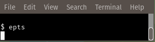</CENTER>
<BR>
This will bring up a dialog box asking for an image file:
<BR>
<BR>
<CENTER>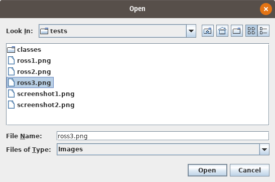</CENTER>
<BR>
There are several combinations of command-line arguments that are
treated specially:
<UL>
  <LI> <CODE>--sessionConfig</CODE> will open a dialog box that will
    allow a session to be configured.
  <LI> <CODE>--templateConfig</CODE> will open a dialog box that
    will allow template processing to be configured.
  <LI> <CODE>--stackTrace --sessionConfig</CODE> will open a dialog
    box that will allow a session to be configured. Stack traces will
    be included in various error messages.
  <LI> <CODE>--stackTrace --templateConfig</CODE> will open a dialog box that
    will allow template processing to be configured. Stack traces will
    be included in various error messages.
  <LI><CODE>--gui --stackTrace --</CODE>  <B><EM>FILE</EM></B>  will open the
    specified file.  This file may be a saved-state file
    (extension <CODE>epts</CODE>), a session configuration file
    (extension <CODE>eptc</CODE>), a script, or an image file. For some
    error messages, a stack trace may be provided.
  <LI><CODE>--gui --stackTrace </CODE> with no additional arguments
    will request an input file.  This file may be a saved-state file
    (extension <CODE>epts</CODE>), a session configuration file
    (extension <CODE>eptc</CODE>), a script, or an image file. For
    some error messages, a stack trace may be provided.
  <LI><CODE>--gui --</CODE> <B><EM>FILE</EM></B> will open the
    specified file.  This file may be a saved-state file
    (extension <CODE>epts</CODE>), a session configuration file
    (extension <CODE>eptc</CODE>), a script, or an image file.
  <LI><CODE>--gui</CODE> with no additional arguments will open a dialog
    box that will ask for a file to read. This file may be a saved-state
    file (extension <CODE>epts</CODE>), a session configuration file
    (extension <CODE>eptc</CODE>), a script,  or an image file.
  <LI><CODE>--stackTrace --</CODE> <B><EM>FILE</EM></B> will open an
    input file, treating it specially if it is a session configuration
    file. Some error messages will provide stack traces.  The file can
    be either a session configuration file, a saved-state file, an
    image file, or a script.
  <LI><CODE>--stackTrace</CODE> will ask for a file to open. The file
    can be either a session configuration file, a saved-state file, an
    image file, or a script.p
  <LI><CODE>--</CODE> <B><EM>FILE</EM></B> will open an input file,
    treating it specially if it is a session configuration file. The
    file can be either a session configuration file, a saved-state
    file, an image file, or a script.
  <LI><B><EM>TCOPTIONS</EM> <EM>TCFILE</EM></B> will process a
    template-configuration file <EM>TCFILE</EM> in match mode provided
    that <EM>TCOPTIONS</EM> contains a <CODE>-o</CODE> option and no
    other options beside <CODE>--</CODE>, and <CODE>--stackTrace</CODE>.
</UL>
Special cases that include an argument that may be a file name always
include the option <CODE>--</CODE> before the file name so that file
names that start with "<CODE>-</CODE>" will not be confused with
options.
<P>
If the epts command is run with multiple file-name arguments, the program's
behavior depends on the file format for the first argument:
<UL>
  <LI> if the argument is an EPTS saved-state file, whose file-name
    extension must be "<CODE>epts</CODE>", the state of a previous
    session will be restored.  Additional arguments are allowed, and
    these must be script files. If the script files doe not have a
    standard extension for a scripting language, the <CODE>-L</CODE>
    option must be used to set the scripting language. The additional
    scripts will not be kept if the state is saved. Instead, they
    may be provided to enhance the current image. For example, the
    script <CODE>resource:grid.js</CODE> will overlay an image with
    a rectangular grid of lines. If the animation the script provides
    is not stored in a variable named <CODE>a2d</CODE>, the
    <CODE>--animation</CODE> option will also be needed.
  <LI> if the argument is an image file, the image it contains will
    be used as a background image. No additional arguments are allowed.
    To enhance an image by using a script, one should create a new
    saved state after
    <A href="#config">configuring graph coordinate space</A>. For example,
    <BLOCKQUOTE>
      <CODE>epts image.png</CODE><BR>
      <EM><A href="#config">Configure GCS</A></EM><BR>
      <EM><A href="#save">Save the session</A> as </EM><CODE>saved.epts</CODE><BR>
      <CODE>epts --double spacing=10m saved.epts resource:grid.js</CODE><BR>
    </BLOCKQUOTE>
  <LI> if the argument is a file containing a script and the file's
    extension matches one used for that scripting language, the script
    will be run.  The script can be partitioned into multiple files
    and these will be processed in the order lists.  These scripts
    must provide an animation and assign it to the variable
    "<CODE>a2d</CODE>" (the name can be different if
    the <CODE>--animation</CODE> option is present). The animation will
    not be run by epts, and should not be run by scripts. The
    objects the animation initially creates will be used to generate
    the image. If the animation the script provides
    is not stored in a variable named <CODE>a2d</CODE>, the
    <CODE>--animation</CODE> option will also be needed.
  <LI> if a non-option argument is a file whose extension is <CODE>eptc</CODE>
    or <CODE>eptt</CODE>, it must be the only non-option argument. Either
    can be proceeded by <CODE>--gui</CODE>, <CODE>--stackTrace</CODE> and/or
    <CODE>--</CODE> in that order (all are optional). For the <CODE>eptt</CODE>
    case, this option may be proceeded by the arguments <CODE>-o</CODE>
    <EM>OUTFILE</EM>, in which case a GUI will not appear, which is desirable
    when the command is being run by software such as <CODE>make</CODE> that
    tracks file dependencies.
</UL>
In addition, the file names can be URIs; however, for a saved-state
file the URI's scheme must be "<CODE>file</CODE>".  Unless the first
file-name argument is a saved-state file, a new session will be
started and EPTS will ask for the name of a file when saving the
session's state. Usually a computer's window system will be configured
so that one can simply double-click the EPTS file rather than having
to run a specific command. For example the files
<BR>
<CENTER>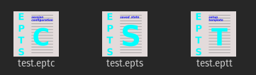</CENTER>
<P>
are EPTS saved-state files and restoring a session using these can be
done using a computer's window system.
<P>
When run from the command line, a number of additional options are
available. Specific categories of options are
<UL>
  <LI> <A href="#scriptOptions">Scripting Options</A>.  These contain
    options specific to scripting.
  <LI> <A href="#templateOptions">Template Options</A> These contain
    options used with templates.
  <LI> <A href="#scrunner">Scrunner Options</A>. These contain options
    used with <CODE>scrunner</CODE> program, whose configuration file
    is used by EPTS.
</UL>
When real numbers are needed as values in options, a suffix specifying
a unit may be added to the number, as describe in the
<A href="#units">Units</A> section.
<P>
There are five options that do not fit into well-defined categories:
<UL>
  <LI><B><CODE>--</CODE></B>. This option simply indicates the end of
    options, and is provided in case a file name starts with a
    "<CODE>-</CODE>".
  <LI><B><CODE>--image</CODE></B> <B><EM>IFILE</EM></B>. This option
    implies that a background image will be displayed.  This option is
    not needed unless <EM>IFILE</EM> is either <B><CODE>-</CODE></B>
    or a saved-state file, but may be used to specify an image file if
    desired (a URI referencing an image can be used as well). When
    used, no arguments after the last option are allowed.  The most
    common image formats are PNG and JPEG. These can use the file-name
    extensions "png" and "jpg" respectively.  If the file name is
    literally "-", EPTS will prompt for an image size and will create
    an image containing a white background. The <CODE>--animation</CODE>
    option may not be used with this option if <EM>IFILE</EM> is not
    an EPTS saved state.  When <EM>IFILE</EM> is an EPTS saved state
    for a saved state that is the argument for an <CODE>--image</CODE>
    option, paths and locations recorded in the saved state will be
    ignored.
  <LI><B><CODE>--port</CODE></B> <B><EM>PORT</EM></B>.  When this flag
    is used, it sets the TCP port number for an embedded web server
    that will provide the on-line manual. The port
    number <EM>PORT</EM> must be a valid TCP port number (1 to 65535
    inclusive, but some ports are reserved or require system
    privileges).
  <LI><B><CODE>--animation</CODE></B> <B><EM>A2D</EM></B>. This option
    indicates that scripts will use the variable <EM>A2D</EM> to
    store the animation used to reference an image. The
    argument <EM>A2D</EM> is the name of a scripting-language variable
    whose value will be an instance of the
    class <CODE>org.bzdev.anim2d.Animation2D</CODE>.  It will be used
    to produce an image by creating a snapshot of the objects that are
    currently defined in the animation and that are visible. The
    scripts will configure this object. The constructor
    for an <CODE>Animation2D</CODE> will determine the size of the image
    unless the <CODE>--image</CODE> option is also present, but
    the <CODE>--image</CODE> option can not be used with this option
    unless the argument for <CODE>--image</CODE> is an EPTS saved state.
  <LI><B><CODE>--gui</CODE></B>. This option indicates that the program
    might be run without directly starting the program from a terminal
    window. The current working directory will be set to
    that containing the file specified by the first non-option argument,
    provided that the file is an image file or an EPTS saved state. In
    addition, error messages (with a couple of exceptions) will appear
    in windows rather than being printed to standard output. This is
    provided because when a program is started using a window system,
    the current working directory is often not the one containing its
    argument file and messages to standard output or standard error
    might not be visible to the user.
  <LI><B><CODE>--sessionConfig</CODE></B>.  This argument is recognized if
    it is the only argument used or if it is preceded by
    the <CODE>--stackTrace</CODE> argument; otherwise an error will be
    generated. It is intended for use by window systems for starting
    EPTS in a particular mode.  When this option is provided, EPTS
    will first show the user a dialog box that allows the user to
    provide data for various scripting-related arguments. The user
    will be given an opportunity to save the configuration before
    proceeding to run EPTS with the corresponding arguments.
</UL>

<H2><A name="units">Units</A></H2>

Options that have double-precision arguments can also specify units
by appending their numerical value with a suffix that treats the argument
as a distance that will be converted to meters.  The suffixes are
<UL>
  <LI><B><CODE>nm</CODE></B> for distances measured in nanometers.
  <LI><B><CODE>um</CODE></B> for distances measured in microns.
  <LI><B><CODE>mm</CODE></B> for distances measured in millimeters.
  <LI><B><CODE>cm</CODE></B> for distances measured in centimeters.
  <LI><B><CODE>m</CODE></B> for distances measured in meters (the conversion
    factor is 1.0 in this case).
  <LI><B><CODE>km</CODE></B> for distances measured in kilometers.
  <LI><B><CODE>in</CODE></B> for distances measured in inches.
  <LI><B><CODE>ft</CODE></B> for distances measured in feet.
  <LI><B><CODE>yd</CODE></B> for distances measured in yards.
  <LI><B><CODE>mi</CODE></B> for distances measured in miles.
</UL>
For example,
<BLOCKQUOTE><PRE><CODE>
      epts --double spacing=10ft  saved.epts resource:grid.js
</PRE></CODE></BLOCKQUOTE>
will show a script-generated image specified by saved.epts with
its points and paths, and with a grid whose lines are spaced at 10-foot
intervals in graph coordinate space in between.

<H2><A name="scriptOptions">Scripting options</A></H2>

The options specific to the EPTS command when scripting is used
directly are the following:
<UL>
  <LI><CODE>--boolean</CODE><EM>NAME</EM><CODE>=</CODE><EM>BVALUE</EM>. The
    argument consists of two parts. <EM>NAME</EM> is the name of a
    scripting-language variable and <EM>BVALUE</EM> is a boolean
    represented by the value <CODE>true</CODE> or <CODE>false</CODE>
    for that variable. The variable will be set before any script is
    run.
  <LI><CODE>--double</CODE> <EM>NAME</EM><CODE>=</CODE><EM>DVALUE</EM>. The
    argument consists of two parts. <EM>NAME</EM> is the name of a
    scripting-language variable and <EM>DVALUE</EM> is a real number
    that provides the corresponding value for that variable. The
    variable will be set before any script is run.
  <LI><CODE>--height</CODE> <EM>HEIGHT</EM>. The height in points for
    an image with one pixel per point that represents a drawing surface.
    If not provided, a default of 1024 will be used.
  <LI><CODE>--int</CODE> <EM>NAME</EM><CODE>=</CODE><EM>IVALUE</EM>. The
    argument consists of two parts. <EM>NAME</EM> is the name of a
    scripting-language variable and <EM>IVALUE</EM> is an integer that
    provides the corresponding value for that variable. The variable
    will be set before any script is run.
  <LI><CODE>--string</CODE> <EM>NAME</EM><CODE>=</CODE><EM>SVALUE</EM>. The
    argument consists of two parts. <EM>NAME</EM> is the name of a
    scripting-language variable and <EM>SVALUE</EM> is a string that
    provides the corresponding value for that variable. The variable
    will be set before any script is run.
  <LI><CODE>--width</CODE> <EM>WIDTH</EM>. The width in points for
    an image with one pixel per point that represents a drawing surface.
    If not provided, a default of 1024 will be used.
</UL>
The options above should not be used when a saved state is restore.
Some <code>scrunner</code> options may also be appropriate for
scripting: the <CODE>-L</CODE> option allows the scripting language to
be explicitly configured (otherwise the language will be guessed from
file-name extensions), and the <CODE>--codebase</CODE> option will
allow other class libraries to be used in addition to the BZDev class
library that is loaded by default.  For security reasons, a saved
state does not include the codebase: instead, the codebase must be
explicitly specified on the command line.

<H2><A name="templateOptions">Template options</A></H2>

The options specific to the EPTS command when templates are used are:
<UL>
  <LI><B><CODE>--class</CODE></B> <B><EM>CLASSNAME</EM></B>.
    This option applies when the <CODE>--tname</CODE> option is used,
    and provides a class name for table templates that generate Java
    code (e.g., a single Java class definition). The argument
    <EM>CLASSNAME</EM> is the simple name for a class.
  <LI><B><CODE>--elevate</CODE></B>. This option applies when the
    <CODE>--pname</CODE> option is set and is ignored otherwise. When
    set, the degree of linear and quadratic B&eacute;zier curve
    segments will be elevated so that all segments are cubic
    B&eacute;zier curve segments.
  <LI><B><CODE>--fill-color</CODE></B> <B><EM>COLOR</EM></B>. This
    option is used for table templates and applies to the path
    specified by the following <CODE>--tname</CODE> option. It sets
    the <CODE>fill</CODE> attribute to <EM>COLOR</EM> in an SVG path
    and the parameter <CODE>fillColor</CODE> to <EM>COLOR</EM> as the
    only element in a <CODE>hasFillColor</CODE> iterative parameter
    for table templates. When used with animation-object factories,
    it will determine if there is a <CODE>drawColor.css</CODE>
    subparameter.
    This option applies to a path specified by the
    next <CODE>--tname</CODE> option. The value of <EM>COLOR</EM> can
    be any color specification accepted by SVG (the same as those
    defined by the CSS2 specification). A value of none indicates that
    no color is specified and the path will not be drawn. Named colors
    are listed at
    &lt;https://www.w3.org/TR/css-color-3/#svg-color&gt;. A <CODE>#</CODE>
    followed immediately by 6 hexadecimal digits gives the RGB values
    (two hexadecimal digits each in that order). One can also use the
    expression
    <CODE>rgb(</CODE><EM>R</EM><CODE>,</CODE><EM>G</EM><CODE>,</CODE><EM>B</EM><CODE>)</CODE>
    where the "red" component <EM>R</EM> , the green component <EM>G</EM>,
    and the blue component <EM>B</EM> vary from 0 to 255 or 0% to 100%.
    Similarly, the expression <CODE>rbga(</CODE><EM>R</EM><CODE>,</CODE><EM>G</EM><CODE>,</CODE><EM>B</EM><CODE>,</CODE><EM>A</EM><CODE>)</CODE>
    can be used, where the alpha component <EM>A</EM> varies from 0 to 1
    and the other components are the same as for the RGB case. An HSL (Hue,
    Saturation, Lightness) specification can also be used:
    <CODE>hsl(</CODE><EM>H</EM><CODE>,</CODE><EM>S</EM><CODE>,</CODE><EM>L</EM><CODE>)</CODE>,
    where <EM>H</EM> is a real number in the range [0, 360), <EM>S</EM>
    is a real number in the range [0%, 100%], and <EM>L</EM> is a real
    number in the range [0%, 100%]. With an alpha channel, the HSL syntax
    is
    <CODE>hsla(</CODE><EM>H</EM><CODE>,</CODE><EM>S</EM><CODE>,</CODE><EM>L</EM><CODE>,</CODE><EM>A</EM><CODE>)</CODE>,
    where <EM>A</EM> is a real number in the range [0, 1].
  <LI><B><CODE>--flatness</CODE></B> <EM>FLATNESS</EM>. This option
    applies when the <CODE>--pname</CODE> option is set and is ignored
    otherwise.  When <EM>FLATNESS</EM> is zero,he <CODE>--limit</CODE>
    option determines the number of times a segment will be
    partitioned.  Otherwise control points must deviate from a
    straight line along each segment by at most the value
    of <EM>FLATNESS</EM>.
  <LI><B><CODE>--gcs</CODE></B>. This option applies when the
    <CODE>--pname</CODE> option is set and is ignored otherwise. When
    present, it indicates that coordinates will be in GCS units. Otherwise
    user-space or image space units are used.
  <LI><B><CODE>--limit</CODE></B> <B><EM>LIMIT</EM></B>.
    This flag applies when the <CODE>--pname</CODE>
    option is used and is ignored otherwise. This parameter limits the
    amount of recursion used when paths are split to meet a flatness
    criteria. When <EM>LIMIT</EM>is zero, paths will not be partitioned.
    Otherwise the path will be split recursively until the flatness limit
    is reached, with <EM>LIMIT</EM> restricting the recursion depth.
  <LI><B><CODE>--map</CODE></B> <B><EM>MAPFILE</EM></B>.
    The file <EM>MAPFILE</EM> is a text file (UTF-8 encoded) whose
    entries are a series of lines. Each line contains a token
    that is the name of an enumeration constant whose type is
    org.bzdev.geom.SplinePathBuilder.CPointType, followed by
    whitespace separating that token from its replacement value.
    Any trailing whitespace will be removed from the replacement.
    Valid token values are <CODE>MOVE_TO</CODE>, <CODE>SPLINE</CODE>,
    <CODE>CONTROL</CODE>, <CODE>SEG_END</CODE>, or <CODE>CLOSE</CODE>.
    In templates, the tokens become the value for <CODE>$(type)</CODE>
    and the replacements become the value for <CODE>$(atype)</CODE>.
    If a mapping is not defined, the replacement is the same as the
    original. The argument <EM>MAPFILE</EM> can be either a file
    name or a URL. If the file named is a relative file, the name
    is resolved using the current working directory when EPTS started.
    This may not be the current working directory while EPTS is
    running as the current working directory may be changed when an
    EPTS file (one with a .epts extension) is processed.  If
    <EM>MAPFILE</EM> starts with the string "resource:",
    "file:", "http:", "https:", or "ftp", then <EM>MAPFILE</EM> is
    assumed to be a URL pointing to the object to read.
  <LI><B><CODE>-o</CODE></B> <B><EM>OUTFILE</EM></B>.  This option
    specifies the name of the output file for template processing.  If
    it is a relative file, it will be resolved against the current
    working directory that existed when EPTS was started.  If the file
    name is "-", the output will be sent to standard output. When a
    <CODE>-o</CODE> is present (it is required by the <CODE>--svg</CODE>
    and <CODE>--template</CODE> options), there must be a single
    filename argument: the name of an EPTS file
    (e.g., <CODE>saved.epts</CODE>).
  <LI><B><CODE>--package</CODE></B> <B><EM>PACKAGENAME</EM></B>.
    This option applies when the <CODE>--tname</CODE> option is used,
    and provides a class name for table templates that generate Java
    code (e.g., a single Java class definition). The argument
    <EM>PACKAGENAME</EM> is the fully-qualified class name for a Java
    package.
  <LI><B><CODE>--pname</CODE></B> <B><EM>PNAME</EM></B>. This option
    selects a variable name, <EM>PNAME</EM>, that must match the name
    of a path.  There may be at most one <CODE>--pname</CODE>
    option. It is used with templates that use the
    <A href="#pitemplates">path-iterator format</A>. <EM>PNAME</EM>
    may also consist of an identifier providing a variable name,
    immediately followed by a ":", in turn followed by a series of
    comma-separated path names.  This in effect creates a path with a
    new name that is a concatenation of paths specified in EPTS's
    table. The main use of this variant is to create shapes that may
    have holes in them. The options <CODE>--elevate</CODE>,
    <CODE>flatness</CODE>, <CODE>--gcs</CODE>,  <CODE>limit</CODE>,
    and/or <CODE>--straight</CODE> may be used when a
    <CODE>--pname</CODE> option is present.
  <LI><B><CODE>--public</CODE></B>. This option applies when the
    <CODE>--tname</CODE> option is used and indicates that any Java
    class being defined by a template should be a public class.
  <LI><B><CODE>--straight</CODE></B>.  This option applies when the
    <CODE>--pname</CODE> option is set and is ignored otherwise.
    When set, the selected path will be flattened and converted to
    straight-line segments.
  <LI><B><CODE>--stroke-color</CODE></B> <B><EM>COLOR</EM></B>. This
    option is used for table templates and applies to the path
    specified by the following <CODE>--tname</CODE> option. It sets the
    stroke attribute to <EM>COLOR</EM> in an SVG path and
    the <CODE>drawColor</CODE> parameter to <EM>COLOR</EM> as the
    only element in a <CODE>hasDrawColor</CODE> iterative parameter
    for use in table templates. Built-in templates that configure
    animation-object factories use these to set
    the <CODE>drawColor.css</CODE> subparameter.
    This option applies to a path specified by the next <CODE>--tname</CODE>
    option. The value of <EM>COLOR</EM> can be any color specification
    accepted by SVG (the same as those defined by the CSS2
    specification). A value of none indicates that no color is
    specified and the path will not be drawn. Named colors are listed
    at &lt;https://www.w3.org/TR/css-color-3/#svg-color&gt;.
    A <CODE>#</CODE> followed immediately by 6 hexadecimal digits
    gives the RGB values (two hexadecimal digits in that order). One
    can also use the expression
    <CODE>rgb(</CODE><EM>R</EM><CODE>,</CODE><EM>G</EM><CODE>,</CODE><EM>B</EM><CODE>)</CODE>
    where the "red" component <EM>R</EM> , the green
    component <EM>G</EM>, and the blue component <EM>B</EM> vary from
    0 to 255 or 0% to 100%. Similarly, the expression
    <CODE>rbga(</CODE><EM>R</EM><CODE>,</CODE><EM>G</EM><CODE>,</CODE><EM>B</EM><CODE>,</CODE><EM>A</EM><CODE>)</CODE>
    can be used, where the alpha component <EM>A</EM> varies from 0 to 1
    and the other components are the same as for the RGB case. An HSL (Hue,
    Saturation, Lightness) specification can also be used:
    <CODE>hsl(</CODE><EM>H</EM><CODE>,</CODE><EM>S</EM><CODE>,</CODE><EM>L</EM><CODE>)</CODE>,
    where <EM>H</EM> is a real number in the range [0, 360), <EM>S</EM>
    is a real number in the range [0%, 100%], and <EM>L</EM> is a real
    number in the range [0%, 100%]. With an alpha channel, the HSL syntax
    is <CODE>hsl(</CODE><EM>H</EM><CODE>,</CODE><EM>S</EM><CODE>,</CODE><EM>L</EM><CODE>,</CODE><EM>A</EM><CODE>)</CODE>, where <EM>A</EM> is a real number
    in the range [0, 1].
  <LI><B><CODE>--stroke-cap</CODE> <EM>VALUE</EM></B>.  This option is
    used for table templates and applies to the path specified by the
    following <CODE>--tname</CODE> option. Its values can be one of
    the following: <B><CODE>butt</CODE></B>, which ends enclosed
    subpaths and dash segments with no added decoration;
    <B><CODE>round</CODE></B>, which ends enclosed subpaths
    and dash segments with a round decoration that has a radius equal
    to half the width of the stroke; and
    <B><CODE>square</CODE></B>, which ends enclosed subpaths and dash
    segments with a square projection that extends beyond the end of the
    segment by a distance equal to half of the stroke width.
  <LI><B><CODE>--stroke-dash-incr</CODE></B> <B><EM>VALUE</EM></B>. This
    option is used for table templates and applies to the path
    specified by the following <CODE>--tname</CODE> option. The
    argument <EM>VALUE</EM> is the length assigned to a "<CODE>-</CODE>"
    or "&nbsp;" in a dash pattern. <EM>VALUE</EM> is specified
    in graph coordinate space when the option <CODE>--stroke-gcs-mode</CODE>
    is <CODE>true</CODE>; otherwise it is specified in user-space or
    image space units.
  <LI><B><CODE>--stroke-dash-pattern</CODE></B> <B><EM>VALUE</EM></B>. A dash
    pattern specifies how dashes are drawn.  <EM>VALUE</EM> will be a
    sequence of minus signs ("<CODE>-</CODE>") and spaces ("&nbsp;"),
    starting with a "<CODE>-</CODE>". The length of <EM>N</EM>
    "<CODE>-</CODE>" characters in a row or <EM>N</EM> spaces in a row
    is <EM>N</EM> multiplied by the dash increment, and corresponds to
    the length of a stroke or gap respectively. The dash pattern will
    repeat. <EM>VALUE</EM> is specified in graph coordinate space
    when the option <CODE>--stroke-gcs-mode</CODE> is
    <CODE>true</CODE>; otherwise it is specified in user-space or
    image space units.
  <LI><B><CODE>--stroke-dash-phase</CODE></B> <B><EM>VALUE</EM></B>. This
    option is used for table templates and applies to the path
    specified by the following <CODE>--tname</CODE>
    option. <EM>VALUE</EM> is offset to the start of the dash
    pattern. <EM>VALUE</EM> is specified in graph coordinate space
    when the option <CODE>--stroke-gcs-mode</CODE> is
    <CODE>true</CODE>; otherwise it is specified in user-space or
    image space units.
  <LI><B><CODE>--stroke-gcs-mode</CODE></B> <B><EM>BOOLEAN</EM></B>. This
    option is used for table templates and applies to the path
    specified by the following <CODE>--tname</CODE> option. The
    value <EM>BOOLEAN</EM> can be <CODE>true</CODE> or
    <CODE>false</CODE>.  This option sets the
    <CODE>stroke.gcsMode</CODE> subparameter for table templates, and
    indicates if stroke dimensions are in GCS units or user-space
    units (the default). For GCS units, the value must be <CODE>true</CODE>.
  <LI><B><CODE>--stroke-join</CODE></B> <B><EM>VALUE</EM></B>.  This option
    is used for table templates and applies to the path specified
    by the following <CODE>--tname</CODE> option. Its values can be one of
    the following:
    <B><CODE>bevel</CODE></B>, which joins path segments by connecting
    the outer corners of their wide outlines with a straight segment;
    <B><CODE>miter</CODE></B>, which joins path segments by extending
    their outside edges until they meet;
    <B><CODE>round</CODE></B>, which joins path segments by rounding
    off the corner at a radius of half the line width.
  <LI><B><CODE>--stroke-miter-limit</CODE></B> <B><EM>VALUE</EM></B>. This
    option is used for table templates and applies to the path
    specified by the following <CODE>--tname</CODE> option. The miter
    limit is the limit such that a line join is trimmed when the ratio
    of miter length to stroke width is greater than this value. The
    miter length is the diagonal length of the miter, which is the
    distance between the inside corner and the outside corner of the
    intersection. The smaller the angle formed by two line segments,
    the longer the miter length and the sharper the angle of
    intersection. The default miter-limit value of 10.0 causes all
    angles less than 11 degrees to be trimmed. Trimming miters
    converts the decoration of the line join to a bevel. This value
    applies only to a line join that has a <CODE>miter</CODE> join
    decoration and must be larger than or equal to 1.0. <EM>VALUE</EM>
    is specified in graph coordinate space when the
    option <CODE>--stroke-gcs-mode</CODE> is <CODE>true</CODE>;
    otherwise it is specified in user-space or image space units.
  <LI><B><CODE>--stroke-width</CODE></B> <B><EM>WIDTH</EM></B>.  This
    option is used for table templates and applies to the path
    specified by the following
    <CODE>--tname</CODE> option.  It sets
    the <CODE>stroke-width</CODE> attribute to <EM>WIDTH</EM> in an
    SVG path. The value of <EM>WIDTH</EM> is
    the width in graph coordinate space when the option
    <CODE>--stroke-gcs-mode</CODE> is <CODE>true</CODE>; otherwise it is
    the width in user-space or image space units.
  <LI><B><CODE>--svg</CODE></B>. This option indicates that the output
    will be an SVG (Scaleable Vector Graphics) file. The
    option <CODE>-o</CODE> is required and at least
    one <CODE>--tname</CODE> option should be present. The
    options <CODE>--fill-color</CODE>, <CODE>--stroke-color</CODE>,
    <CODE>--stroke-cap</CODE>, <CODE>--stroke-dash-incr</CODE>,
    <CODE>--stroke-dash-phase</CODE>, <CODE>--stroke-dash-pattern</CODE>,
    <CODE>--stroke-gcs-mode</CODE>, <CODE>--stroke-miter-limit</CODE>,
    <CODE>stroke-join</CODE>, <CODE>--stroke-width</CODE>, and
    <CODE>--winding-rule</CODE>, may be used (at least one will
    typically be provided). A <CODE>--template</CODE> option must not
    be provided.
  <LI><B><CODE>--tdef</CODE></B>
    <B><EM>DEFNAME</EM><CODE>=</CODE><EM>DEFVALUE</EM></B>.
    This option adds template key-value pairs for use by the template
    processor in addition to the ones defined by EPTS. The argument
    <EM>DEFVALUE</EM> is a string. If empty, the definition is ignored.
    Otherwise, <EM>DEFNAME</EM> can be a name or a pair of names
    separated by a colon.  In the latter case, the first name in the pair
    is treated as an iteration directive with a single iteration, mimicking
    an 'if' statement, and the second name is the name to which the
    value will be assigned.  For example, the argument
    <CODE>--tdef hasCount:count=30</CODE> will result in the
    template text
    <BLOCKQUOTE>
      <CODE>$(hasCount:endCount)count = $(count);$(endCount)</CODE>
    </BLOCKQUOTE>
    being changed into
    <BLOCKQUOTE><CODE>count = 30</CODE></BLOCKQUOTE>
    when this <CODE>--tdef</CODE>
    is present and into empty text when this <CODE>--tdef</CODE> is not
    present. A number of names are reserved:
    <CODE>class</CODE>, <CODE>hasPackage</CODE>, <CODE>height</CODE>,
    <CODE>items</CODE>, <CODE>optSpace</CODE>, <CODE>package</CODE>,
    <CODE>paths</CODE>, <CODE>public</CODE>, and <CODE>width</CODE>.
    Some of these reserved names refer to iterative directives, and
    each iterative directive will define additional directives during
    an iteration. These will override a global directive with the same
    name during an iteration but will not alter such a global
    directive.
  <LI><B><CODE>--template:</CODE></B><EM>RESOURCE</EM>.
    This option is a shortcut that behaves like the option
    <CODE>--template resource:</CODE><EM>RESOURCE</EM>.
  <LI><B><CODE>--template</CODE></B> <B><EM>TFILE</EM></B>. This
    option may not be used with the <CODE>--svg</CODE> option,
    but as with the <CODE>--svg</CODE> option, the <CODE>-o</CODE>
    option is required.
    When <EM>TFILE</EM> starts with the string "resource:", "file:",
    "http:", "https:", or "ftp", <EM>TFILE</EM> is assumed to be a
    URL. Otherwise is is assumed to be the name of a file.  The syntax
    of a template is describe in the section of this manual entitled
    "<A href="#templates">Templates</A>". For the
    <CODE>resource</CODE> protocol, the template is embedded in the
    EPTS application.  and these are described above in the section
    describing <A href="#builtins">built-in templates</A>. The supported
    table templates are <CODE>resource:ECMAScriptLayers</CODE>,
    <CODE>resource:ECMAScriptLocations</CODE>,
    <CODE>resource:ECMAScriptPaths</CODE>, and
    <CODE>resource:ECMAScript</CODE>. These must be used without
    the <CODE>--pname</CODE> option. Supported path-iterator templates
    are <CODE>resource:area</CODE>, <CODE>resource:circumference</CODE>,
    <CODE>resource:pathlength</CODE>, and <CODE>resource:SegmentsCSV</CODE>.
    These must be used with the <CODE>--pname</CODE> option.
  <LI><B><CODE>--tname</CODE></B> <B><EM>TNAME</EM></B>. This option's
    argument <EM>TNAME</EM> provides the name of a variable that names
    a path.  When this option is provided, a table template must be
    used and the keymap is the table keymap as described by the manual
    page <CODE>epts(5)</CODE> and by the on-line manual for
    <CODE>epts</CODE>. <EM>TNAME</EM> may be an existing identifier for
    a path or a location in an EPTS table, or it may consist of an
    identifier, immediately followed by a ":", in turn followed by a
    series of comma-separated path names.  This in effect creates a
    path with a new name that is a concatenation of paths specified
    in EPTS's table. Before each <CODE>--tname</CODE> option, there
    may be a <CODE>--winding-rule</CODE> option.
  <LI><B><CODE>--web</CODE></B>. The <CODE>--port</CODE> option should
    also be used to provide a non-zero port number. This option will
    start an embedded web server allowing the manual to be shown.
  <LI><B><CODE>--winding-rule</CODE></B> <B><EM>RULE</EM></B>.  This
    option, when present, adds a winding rule for use with table
    templates when the <CODE>--tname</CODE>option is used, and must
    precede that option. After a <CODE>--tname</CODE>option is seen,
    the winding rule removed.  The values of <EM>RULE</EM> may be
    <CODE>evenodd</CODE> or <EM>nonzero</EM>. The
    <CODE>--winding-rule</CODE> option sets a template-table keymap
    directive as described in the documentation for
    <CODE>epts</CODE>(5) and in the on-line manual.
  <LI><B><CODE>--zorder</CODE></B> <B><EM>VALUE</EM></B>. This option is
    used for table templates and applies to the path specified by the
    following  <CODE>--tname</CODE> option. This option's argument
    <EM>VALUE</EM> provides the Z-order for a path.
  <LI><B><CODE>--</CODE></B>. End of options. This can be used
    if file names start with the character '-'. Otherwise
    it is not necessary.
</UL>

<H2><A name="scrunner">Scrunner options</A></H2>

There are a set of command-line options that are the same as those
provided by the scrunner command. These are
<UL>
  <LI><B><CODE>--add-modules</CODE></B> <B><EM>SPEC</EM></B>. This
    option's argument is a comma-separate list of module names.
    Multiple instances of this option can be used as well. The list
    must not contain whitespace. It is used primarily in cases in which
    the only use of a module occurs in scripts. It is not necessary when
    a module provides a factory as that is explicitly indicated in the
    module definition.
  <LI><B><CODE>--classpathCodebase</CODE></B> <B><EM>SPEC</EM></B>. This
    option's argument is treated the same of the argument for the
    <CODE>--codebase</CODE> option below, but adds code bases to the
    class path instead of the module path. This option is provided for
    cases in which a JAR file cannot be used on the module path.
  <LI><B><CODE>--codebase</CODE></B> <B><EM>SPEC</EM></B>.  This
    option allows additional code bases to be available to the
    JVM and places these on the module path. As a result, each codebase
    must be a modular JAR file.
    Any number of <CODE>--codebase</CODE> options may be
    provided, and each option can contain multiple code bases with the
    character '|' used as a separator. As a special case, if there are
    n '|' characters in a row, they will be placed by floor(n/2) '|'
    characters and when n is odd, the final '|' is used as a
    separator.  As a result, except for the first component of a
    code-base path, components may not start with a '|'.  A code base
    is specified by either a URL or a path name of a file in (local)
    file system.  If there is a ':' in the file name and the preceding
    characters are consistent with a protocol name in a URL, the file
    name will be treated as a URL. In this case, use a "file:" URL to
    specify the code base.  Several characters are treated
    specially. A leading "~" followed by the name separator ("/" for
    Unix) is expanded to the user's home directory. A file name
    consisting only of "~" is replaced with the user's home
    directory. A leading "~~" is replaced with "~", and a leading
    "..." followed by the name separator ("/" for Unix) is replaced by
    the directory in which the BZDev class library's JAR file is
    located. If an EPTS session is saved, the saved
    file will contain the files and directories provided by
    the <CODE>--codebase</CODE> options, but for security reasons the
    user will be asked to confirm all codebases except those in the
    same directory as the BZDev class library.
    Finally, the substitutions for '|', '~', and '...' (followed by the
    file-name separator) apply only to the <CODE>--codebase</CODE>
    option, not to file-name arguments that appear after the last option.
  <LI><B><CODE>-D</CODE></B><B><EM>NAME</EM></B><B><CODE>=</CODE></B><B><EM>VALUE</EM></B>.
    This option defines a system property whose name is <EM>Name</EM>
    and whose value is <EM>VALUE</EM>.
  <LI><B><CODE>--dryrun</CODE></B>. This options simply prints the java
    command that will be used to start the JVM and run the program.
    It is useful primarily for debugging.
  <LI><B><CODE>-J</CODE></B><B><EM>OPTION</EM></B>. The string <EM>OPTION</EM>
    is turned into an option passed to the 'java' command used
    to start the JVM. It can be used, for example, to increase the
    memory available to the JVM. If the option starts with a leading
    '-', that must be provided explicitly.
  <LI><B><CODE>-L</CODE></B> <B><EM>LNAME</EM></B>.
    When scripting is used, this option explicitly indicates a
    scripting language. <CODE>ECMAScript</CODE> is always supported.
</UL>

<H2><A name="examples">CLI examples</A></H2>
<UL>
  <LI><B><CODE>epts saved.epts</CODE></B>
    <BR>
    Start EPTS, restoring its state to one saved in a previous session.
  <LI><B><CODE>epts saved.epts resource:grid.js</CODE></B>
    <BR>
    Start EPTS, restoring its state to one saved in a previous session
    and use a script to overlay a grid on top of the image. Points and
    paths will be placed over the grid. The image in this case must be
    created by a script, and the built-in script grid.js assumes that
    the animation used to create the grid is named a2d.
  <LI><B><CODE>epts --codebase foo.jar saved.epts</CODE></B>
    <BR>
    Start EPTS, restoring its state to one saved in a previous session,
    adding a jar file <CODE>foo.jar</CODE> to EPTS's code base.
  <LI><B><CODE>epts image.png</CODE></B>
    <BR>
    Start EPTS with an image preloaded as its
    background.
  <LI><B><CODE>epts --animation anim commands.js</CODE></B>
    <BR>
    Start EPTS and run the script provided in commands.js to generate
    an image from an animation <CODE>anim</CODE> (an instance of
    <CODE>org.bzdev.anim2d.Animation2D</CODE>).
  <LI><B><CODE>epts --codebase foo.jar --animation anim commands.js</CODE></B>
    <BR>
    Start EPTS and run the script provided in commands.js to generate
    an image from an animation <CODE>a2d</CODE> (an instance of
    <CODE>org.bzdev.anim2d.Animation2D</CODE>). The file foo.jar contains
    additional classes needed by the script. The <CODE>--codebase</CODE>
    option will be needed when restarting EPTS using a saved state
    created when this command is being run.
  <LI><B><CODE>epts -o out.js --template:ECMAScript saved.epts</CODE></B>
    <BR>
    Run EPTS without a GUI to generate a file <CODE>out.js</CODE>
    containing a series of ECMAScript statements containing the contents
    of the EPTS table.
  <LI><B><CODE>epts -o out.svg --svg --fill red --pname s:c1,c2 saved.epts</CODE></B>
    <BR>
    Run EPTS without a GUI to generate an SVG file <CODE>out.svg</CODE>
    containing a shape <CODE>s</CODE>consisting of two curves
    (<CODE>c1</CODE> and <CODE>c2</CODE>) defined in the EPTS table.
    The table is the one defined by the file <CODE>saved.epts</CODE>
  <LI><B><CODE>epts -o - --gcs --template:area -pname s:c1,c2</CODE></B>
    <BR>
    Run EPTS without a GUI to compute the area of a shape bounded
    by the curves <CODE>c1</CODE> and <CODE>c2</CODE>. The area is
    in GCS units.
</UL>

<H1><A name="scripting">Scripting</A></H1>

Scripts created for EPTS are compatible with those used by the command
<CODE>scrunner</CODE> when the Java package
<CODE>org.bzdev.anim2d</CODE> is used. Some scripts require additional
code bases to run, in which case the <CODE>--codebase</CODE> option
will be needed. A copy of URLs indicating the codebase locations are
kept in saved-state file when scripts are used to create the
background image and the session is subsequently saved.  Basically a
user will create an animation and a series of animation objects, but
will not actually run the animation.  Initially, two variables are
defined. The first is named <CODE>scripting</CODE> and contains a
scripting context (the use of this is described in the BZDev class
library and <CODE>scrunner</CODE> documentation.) The second is the
variable <CODE>epts</CODE>, which is defined when EPTS is running. The
<CODE>--animation</CODE> option, when present, sets the name of the
scripting-language variable referring to the animation, with a default
variable name of "<CODE>a2d</CODE>". When a new script is run, EPTS
checks if the animation was created and if it is, EPTS will set the
variable <CODE>a2d</CODE> to refer to this animation (this is done so
because built-in scripts described below assume the animation is named
"<CODE>a2d</CODE>".
<P>
When image sizes are known and scripts are being
run, the scripting-language variable <CODE>epts</CODE> will have a
non-null value and will provide several methods:
<UL>
  <LI><B><CODE>epts.getWidth()</CODE></B> to determine the frame width
    in user-space units.
  <LI><B><CODE>epts.getHeight()</CODE></B> to determine the frame height
    in user-space units.
  <LI><B><CODE>epts.hasDistances()</CODE></B> to determine if user-space
    and graph-coordinate-space distances are valid (true if valid, false if
    not).
  <LI><B><CODE>epts.getUserDist()</CODE></B> to determine a user-space
    distance.
  <LI><B><CODE>epts.getGCSDist()</CODE></B> to determine a corresponding
    graph-coordinate-space distance.
  <LI><B><CODE>epts.getRefPointName()</CODE></B> to determine location
    of the reference point (the value is an enumeration constant defined
    by <CODE>org.bzdev.graphs.RefPointName</CODE>.
  <LI><B><CODE>epts.getXOrigin()</CODE></B> to determine the X value in
    graph coordinate space for the reference point.
  <LI><B><CODE>epts.getYOrigin()</CODE></B> to determine the Y value
    in graph coordinate space for the reference point.
  <LI><B><CODE>epts.getXFract()</CODE></B> to determine the fractional
      distance from the left edge of a graph's range to its right
      edge.  The values returned can be either 0.0, 0.5, or 1.0 and
      match the RefPointName enumeration.
  <LI><B><CODE>epts.getYFract()</CODE></B> to determine the fractional
      distance from the lower edge of a graph's range to its upper
      edge.  The values returned can be either 0.0, 0.5, or 1.0 and
      match the RefPointName enumeration.
</UL>
These methods should be used to configure the width and height of an
animation's frame. For example,
<BLOCKQUOTE><PRE><CODE>
      if (typeof epts === 'undefined' || epts == null) {
          var frameWidth = 1024;
          var frameHeight = 1024;
      } else {
          var frameWidth = epts.getWidth();
          var frameHeight = epts.getHeight();
      }
      var a2d = new Animation2D(scripting, frameWidth, frameHeight);
</CODE></PRE></BLOCKQUOTE>
When there is no image, the variable <CODE>epts</CODE> will still be
defined, but its value will be null (when defined, that is an indication
that the script is being run by EPTS).  While the
<A href="#config">Configure CGS</A> menu item will not be disabled
when there is no image, the fields shown in its dialog box will not
be editable.
<P>
After an animation is created, one will typically create animation
factories and use these factories to create animation objects that
can be displayed.  In particular, animation layers can be used to
draw simple geometrical figures, figures based on paths, and can
scale and place images. The normal sequence of calling the animation's
methods <CODE>initFrames</CODE>, <CODE>scheduleFrames</CODE> and
<CODE>run</CODE> are skipped: EPTS will iterate through the animation's
objects using their Z-order and write them to a graph, thereby creating
a background.
<P>
To use EPTS in developing animations, one can use templates to
create ECMAScript code that will provide paths or in some cases
shapes. There will be a series of files that can then be
used by <CODE>scrunner</CODE>. Programs such as <CODE>make</CODE>
that track file dependencies can be used to run EPTS with template
options.

<H1><A name="scripts">Built-in scripts</A></H1>

There are two built-in scripts accessible using the <CODE>resource</CODE>
protocol:
<UL>
  <LI><B><CODE>resource:grid.js</CODE></B> overlays a rectilinear grid
    as a representation of a Cartesian coordinates.
  <LI><B><CODE>resource:polar.js</CODE></B> overlays a polar grid as a
    representation of polar coordinates.
</UL>
While there is a default behavior in both cases, the grids can be tuned
if necessary.  These scripts uses the variable a2d to
refer to an animation. If another script assigns a value to
<CODE>a2d</CODE>, the scripts described below will not override that
value. They will, however, set the value of <CODE>a2d</CODE> if it is
null or undefined. EPTS itself will set <CODE>a2d</CODE> to the
current animation, if one exists, so that the built-in scripts use the
current animation (when available) instead of creating a new one.
If <CODE>a2d</CODE> is undefined or null, these scripts will create an
animation and assign it to <CODE>a2d</CODE>.
<P>
The grids the scripts display can
be controlled by setting various EMCAScript variables. This is done
using the CLI options
<UL>
  <LI><B><CODE>--boolean</CODE></B>. This must be used for variables
    whose values are either <CODE>true</CODE> or <CODE>false</CODE>.
  <LI><B><CODE>--double</CODE></B>. This must be used for variables
    whose values are double-precision numbers
  <LI><B><CODE>--int</CODE></B>. This must be used for variables whose
    values are integers (Java <CODE>int</CODE> or <CODE>long</CODE>
    values).
  <LI><B><CODE>--string</CODE></B>. This must be used for variables
    whose values are strings.
</UL>
<P>
As stated in the <A href="#scriptOptions">Scripting Options</A>
section of this manual, each of these options takes an argument of
the form <EM>VARIABLE</EM><CODE>=</CODE><EM>VALUE</EM>, where
<EM>VARIABLE</EM> is one of the variables listed the sections
describing <A href="#cartesian">Cartesian-grid</A> scripts and
<A href="#polar">polar-grid</A> scripts, and <EM>VALUE</EM> is the
corresponding value.  The variables <CODE>frameWidth</CODE>,
<CODE>frameHeight</CODE>, <CODE>userDist</CODE>, <CODE>gcsDist</CODE>,
<CODE>xorigin</CODE>, <CODE>yorigin</CODE>, <CODE>xfract</CODE>,
and <CODE>yfract</CODE> are used by both scripts with the same
meaning.  They are used by these scripts only if an animation has to
be created by them.

<H2><A name="cartesian">Cartesian-grid script</A></H2>

The script <CODE>resource:grid.js</CODE> will overlay an image with a
Cartesian (rectilinear) grid consisting of parallel, evenly spaced
lines in both the X and Y directions.  The variables that configure
Cartesian grids are the following:
<UL>
  <LI><B><CODE>frameWidth</CODE></B> - an integer giving the width of
    the background image that will be created. The default is
    1920. The value is ignored if the animation was created by another
    script.
  <LI><B><CODE>frameHeight</CODE></B> - an integer giving the height
    of the background image that will be created. The default is
    1080. The value is ignored if the animation was created by another
    script.
  <LI><B><CODE>userdist</CODE></B> - a double giving a reference
    distance in user space. The default is 1.0. The ratio
    userdist/gcsdist is the scaling factor for converting distances in
    graph coordinate space to user space. The value is ignored if the
    animation was created by another script.
  <LI><B><CODE>gcsdist</CODE></B> - a double giving a reference
    distance in graph coordinate space. The default is 1.0. The ratio
    userdist/gcsdist is the scaling factor for converting distances in
    graph coordinate space to user space. The value is ignored if the
    animation was created by another script.
  <LI><B><CODE>xorigin</CODE></B> - a double giving the X coordinate
    in graph coordinate space for the frame's reference point. The
    default is 0.0.  The value is ignored if the animation was created
    by another script.
  <LI><B><CODE>yorigin</CODE></B> - a double giving the Y coordinate
    in graph coordinate space for the frame's reference point. The
    default is 0.0.  The value is ignored if the animation was created
    by another script.
  <LI><B><CODE>xfract</CODE></B> - a double giving the fraction of the
    frame width at which the reference point appears (0.0 is the left
    edge and 1.0 is the right edge). The default is 0.0. The value is
    ignored if the animation was created by another script.
  <LI><B><CODE>yfract</CODE></B> - a double giving the fraction of the
    frame height at which the reference point appears (0.0 is the
    lower edge and 1.0 is the upper edge). The default is 0.0. The
    value is ignored if the animation was created by another script.
  <LI><B><CODE>spacing</CODE></B> - a double giving the grid spacing
    in graph-coordinate space units. If not provided explicitly or if
    the value is null, 0.0, or negative, the default is computed by
    taking the minimum of the frame width and frame height, converting
    that minimum to graph coordinate space units, then dividing by 10,
    and finally finding the largest power of 10 that is not larger
    than this value. The grid lines will appear at X or Y coordinates
    that are an integral multiple of the spacing.
  <LI><B><CODE>subspacing</CODE></B> - the number of subspacings per
    spacing for a finer grid.  if undefined or 1, the value is
    ignored. In practice, values that create a subgrid are either 2,
    4, 5, or 10.  The value must be an integer.
  <LI><B><CODE>axisColor</CODE></B> - the axis color provided as a CSS
    string, null or undefined for the default.
  <LI><B><CODE>spacingColor</CODE></B> - the spacing color provided as
    a CSS string, null or undefined for the default.
  <LI><B><CODE>subspacingColor</CODE></B> - the subspacing color
    provided as a CSS string, null or undefined for the default.
  <LI><B><CODE>strokeWidth</CODE></B> - a double giving the width of
    the stroke used to create grid lines; undefined or null for a
    default.
  <LI><B><CODE>gridZorder</CODE></B> - an integer giving the z-order
    to use for the object that creates the grid. The default is the
    javascript value java.lang.Long.MAX_VALUE (2<SUP>53</SUP> - 1).
</UL>

<H2><A name="polar">Polar-grid script</A></H2>

The script <CODE>resource:polar.js</CODE> will overlay an image with
a polar grid. These grids consist of a set of evenly spaced circles
centered at a common origin, and radial lines with the same angular
spacing, excluding areas near the origin where some lines may be
eliminated in order to prevent them from running together.  The
variables that configure polar grids are the following:
<UL>
  <LI><B><CODE>frameWidth</CODE></B> - an integer giving the width of
    the background image that will be created. The default is
    1920. The value is ignored if the animation was created by another
    script. If undefined or null, the default will be used.
  <LI><B><CODE>frameHeight</CODE></B> - an integer giving the height
    of the background image that will be created. The default is
    1080. The value is ignored if the animation was created by another
    script. If undefined or null, the default will be used.
  <LI><B><CODE>userdist</CODE></B> - a double giving a reference
    distance in user space. The default is 1.0. The ratio
    userdist/gcsdist is the scaling factor for converting distances in
    graph coordinate space to user space. if undefined or null, the
    default will be used.
  <LI><B><CODE>gcsdist</CODE></B> - a double giving a reference
    distance in graph coordinate space. The default is 1.0. The ratio
    userdist/gcsdist is the scaling factor for converting distances in
    graph coordinate space to user space. If undefined or null, the
    default will be used.
  <LI><B><CODE>xorigin</CODE></B> - a double giving the X coordinate
    in graph coordinate space for a reference point in the frame. The
    default is 0.0.  The value is ignored if the animation was created
    by another script. if undefined or null, the default will be used.
  <LI><B><CODE>yorigin</CODE></B> - a double giving the Y coordinate
    in graph coordinate space for a reference point in the frame. The
    default is 0.0.  The value is ignored if the animation was created
    by another script. If undefined or null, the default will be used.
  <LI><B><CODE>xfract</CODE></B> - a double giving the fraction of the
    frame width at which the reference point appears (0.0 is the left
    edge and 1.0 is the right edge). The default is 0.0. The value is
    ignored if the animation was created by another script.  If
    undefined or null, the default will be used.
  <LI><B><CODE>yfract</CODE></B> - a double giving the fraction of the
    frame height at which the reference point appears (0.0 is the
    lower edge and 1.0 is the upper edge). The default is 0.0. The
    value is ignored if the animation was created by another script.
    If undefined or null, the default will be used.
  <LI><B><CODE>fractional</CODE></B> - true if the grid origin's
    coordinates (gridXOrigin, gridYOrigin) are a fraction of the
    position in the frame (excluding offsets); false if absolute
    values in graph coordinate space are used. If undefined or null, a
    default will be used.
  <LI><B><CODE>gridXOrigin</CODE></B> - a double giving the X
    component of the grid's origin.  When fractional is true, the
    value is a fraction of the position in the frame, excluding
    offsets, in the X direction. When false, it is the X coordinate of
    the origin for a polar coordinate grid, given in
    graph-coordinate-space units. If undefined or null, a default
    value will be used.
  <LI><B><CODE>gridXOrigin</CODE></B> - a double giving the Y
    component of the grid's origin.  When fractional is true, the
    value is a fraction of the position in the frame, excluding
    offsets, in the Y direction. When false, it is the Y coordinate of
    the origin for a polar coordinate grid, given in
    graph-coordinate-space units. If undefined or null, a default
    value will be used.
  <LI><B><CODE>radialSpacing</CODE></B> - a double giving the radial
    spacing for concentric circles; null, undefined, 0.0 or negative
    for a default.
  <LI><B><CODE>angularSpacing</CODE></B> - the angular spacing in
    degrees for radial lines.  The value should be a divisor of 90
    degrees or either null or undefined for a default.
  <LI><B><CODE>gridColor</CODE></B> - the grid-line color provided as
    a CSS string, undefined or null for the default.
  <LI><B><CODE>strokeWidth</CODE></B> - a double giving the width of
    the stroke used to create grid lines; undefined or null for a
    default.
  <LI><B><CODE>gridZorder</CODE></B> - an integer giving the z-order
    to use for the object that creates the grid. The default is the
    javascript value java.lang.Long.MAX_VALUE (2<SUP>53</SUP> - 1).
</UL>


<H1><A name="savedFormat">Saved-state file format</A></H1>

EPTS will generate an XML file to save the state of a session (the XML
specification can be found at
&lt;https://www.w3.org/TR/2006/REC-xml11-20060816/&gt;). This file
starts with the following lines:
<BLOCKQUOTE><PRE><CODE>
    &lt;?xml version="1.1" encoding="UTF-8"?&gt;
    &lt;!DOCTYPE images PUBLIC "-//BZDev//EPTS-1.0//EN"
              "resource:org/bzdev/epts/epts-1.0.dtd"&gt;
    &lt;epts xmlns="http://bzdev.org/DTD/epts-1.0"&gt;
</CODE></PRE></BLOCKQUOTE>
and ends with the line
<BLOCKQUOTE><PRE><CODE>
    &lt;/epts&gt;
</CODE></PRE></BLOCKQUOTE>
The <CODE>resource</CODE> protocol is one that is recognized by the
EPTS program and allows it to read the file <CODE>epts-1.0.dtd</CODE>
from the program's JAR file.  The <CODE>epts</CODE> element contains a
sequence of elements:
<OL>
  <LI> An <B><CODE>image</CODE></B> element.
  <LI> An optional <B><CODE>codebase</CODE></B> element.
  <LI> An optional <B><CODE>modules</CODE></B> element.
  <LI> An optional <B><CODE>classpath</CODE></B> element.
  <LI> An optional <B><CODE>scripting</CODE></B> element.
  <LI> An optional <B><CODE>targetList</CODE></B> element.
  <LI> A <B><CODE>gcsconfig</CODE></B> element.
  <LI> A <B><CODE>table</CODE></B> element.
  <LI> An optional <B><CODE>filters</CODE></B> element
</OL>
These elements are listed in the order in which they must appear.

<H2><A name="imageElement">The image element</A></H2>

The <CODE>image</CODE> element does not contain any other
elements. Its attributes are
<UL>
  <LI><B><CODE>width</CODE></B>. The value of this attribute is an
    integer giving the width in pixels of an image that will be used
    as a background.
  <LI><B><CODE>height</CODE></B>. The value of this attribute is an
    integer giving the height in pixels of an image that will be used
    as a background.
  <LI><B><CODE>imageURIExists</CODE></B>. The value of this attribute
    is <B><CODE>true</CODE></B> or <B><CODE>false</CODE></B>. When
    <B><CODE>true</CODE></B>, the following <CODE>targetList</CODE>
    element will contain a single argument giving the URI for an image
    to display. Otherwise the following <CODE>targetList</CODE>
    arguments will contain the URIs for scripts that will be loaded.
    If this attribute is missing, the default value is
    <B><CODE>false</CODE></B>.
</UL>

<H2><A name="codebaseElement">The codebase element</A></H2>

The <CODE>codebase</CODE> element does not have any attributes.
Instead, it contains a sequence of <CODE>path</CODE> elements, which
also do not have any attributes.  The contents of a path element
is text (XML PCDATA) providing a URI indicating where an image or
script can be found. Relative URIs will be resolved against the
URI for the current working directory.

<H2><A name="modulesElement"> The modules element</A></H2>

The <CODE>modules</CODE>element does not have any attributes.
Instead, it contains a sequence of <CODE>module</CODE>elements.
The contents of a <CODE>module</CODE> element is text (XML PCDATA)
providing the name of a module.

<H2><A name="classpathElement"> The classpath element</A></H2>

The <CODE>classpath</CODE> element does not have any attributes.
Instead, it contains a sequence of <CODE>path</CODE> elements, which
also do not have any attributes.  The contents of a path element
is text (XML PCDATA) providing a URI indicating where an image or
script can be found. Relative URIs will be resolved against the
URI for the current working directory.

<H2><A name="scriptingElement">The scripting element</A></H2>

The <CODE>scripting</CODE> element has two attributes:
<UL>
  <LI><B><CODE>animation</CODE></B>. The value of this attribute is the
    name of a scripting-language variable that will be bound to an
    instance of the class <CODE>org.bzdev.anim2d.Animation2D</CODE>
    that will be used to create an image.
  <LI><B><CODE>language</CODE></B>. The value of this attribute is the
    name of the scripting language (e.g., ECMAScript).
</UL>
In addition, the <CODE>scripting</CODE> element contains a series of <EM>binding</EM>
elements. These bind scripting-language variables to values.

<H3>The binding element</H3>

The <CODE>binding</CODE> element has two attributes:
<UL>
  <LI><B><CODE>name</CODE></B>. The value of this attributes is the name
    of a scripting-language variable to which a value will be bound.
  <LI><B><CODE>type</CODE></B>. The value of this attribute provides the
    Java type of a scripting-language variable, and can be
    <B><CODE>int</CODE></B> for integer values, <B><CODE>double</CODE></B>
    for real numbers, or <B><CODE>String</CODE></B> for strings.
</UL>
The contents of this element contain the string representation of its
value. For an integer, the string must be usable as the argument of
the method<CODE>java.lang.Integer.parseInt</CODE> and for a real number,
the string must be usable as the argument of the method
<CODE>java.lang.Double.parseDouble</CODE>.

<H2><A name="targetListElement">The targetList element</A></H2>

The <CODE>targetList</CODE> element does not have any attributes. Its
contents consist of a sequence of <CODE>argument</CODE> elements.
The <CODE>argument</CODE> elements also do not have any attributes.
The content for each <CODE>argument</CODE> element is a URI for
a file. If a relative URI, it is resolved relative to the current
working directory (set when EPTS executes). If no protocol is provided,
the URI is assumed to be a <CODE>file</CODE> URI.
<P>
The protocol portion of the URL can contain the following:
<UL>
  <LI><B><CODE>file</CODE></B> (a file on the local file system)
  <LI><B><CODE>http</CODE></B> (a resource obtained via an HTTP GET
    request).
  <LI><B><CODE>https</CODE></B> (a resource obtained via a secure HTTP
    GET request).
  <LI><B><CODE>ftp</CODE></B> (a resource obtained via FTP).
  <LI><B><CODE>jar</CODE></B> (an resource in a JAR file).
  <LI><B><CODE>resource</CODE></B> (a resource in the application's
  code base).
</UL>
The one used is followed by a colon.

<H2><A name="gcsconfigElement">The gcsconfig element</A></H2>

The <CODE>gcsconfig</CODE> element has the following attributes, all of
which are required:
<UL>
  <LI><B><CODE>unitIndex</CODE></B>. The value is an integer indicating
    the type of units:
    <UL>
      <LI> <B><CODE>0</CODE></B>. Distances are in custom units.
      <LI> <B><CODE>1</CODE></B>. Distances are in nanometers (nm).
      <LI> <B><CODE>2</CODE></B>. Distances are in micrometers (um).
      <LI> <B><CODE>3</CODE></B> Distances are in millimeters (mm).
      <LI> <B><CODE>4</CODE></B>. Distances are in centimeters (cm).
      <LI> <B><CODE>5</CODE></B>. Distances are in meters (m).
      <LI> <B><CODE>6</CODE></B>. Distances are in kilometers (km).
      <LI> <B><CODE>7</CODE></B>. Distances are in inches.
      <LI> <B><CODE>8</CODE></B>. Distances are in feet.
      <LI> <B><CODE>9</CODE></B>. Distances are in yards
      <LI> <B><CODE>10</CODE></B>. Distances are in miles.
    </UL>
  <LI><B><CODE>refPointIndex</CODE></B>. The value is an integer indicating
    the reference point:
    <UL>
      <LI><B><CODE>0</CODE></B>. The reference point is at the
	upper left corner of the image.
      <LI><B><CODE>1</CODE></B>. The reference point is at the
	center of the upper edge of the image.
      <LI><B><CODE>2</CODE></B>. The reference point is at the
	upper right corner of the image.
      <LI><B><CODE>3</CODE></B>. The reference point is at the
	center of the left edge of the image.
      <LI><B><CODE>4</CODE></B>. The reference point is at the
	center of the image.
      <LI><B><CODE>5</CODE></B>. The reference point is at the
	center of the right edge of the image.
      <LI><B><CODE>6</CODE></B>. The reference point is at the
	lower left corner of the image.
      <LI><B><CODE>7</CODE></B>. The reference point is at the
	center of the lower edge of the image.
      <LI><B><CODE>8</CODE></B>. The reference point is at the
	lower right corner of the image.
    </UL>
  <LI><B><CODE>userSpaceDistance</CODE></B>. A distance in user
    space.
  <LI><B><CODE>gcsDistance</CODE></B>. A distance in graph coordinate
    space corresponding to the user-space distance, measured in the
    units specified by the <CODE>unitIndex</CODE> attribute.
  <LI><B><CODE>xrefpointGCS</CODE></B>. The X coordinate of the
    reference point in graph coordinate space, given in either custom
    units or meters.
  <LI><B><CODE>yrefpointGCS</CODE></B>. The Y coordinate of the
    reference point in graph coordinate space, given in either custom
    units or meters.
</UL>

<H2><A name="tableElement">The table element</A></H2>

The <CODE>table</CODE> element has no attributes and contains a sequence
of <CODE>row</CODE> elements. Each <CODE>row</CODE> element is empty, but
with the following attributes
<UL>
  <LI><B><CODE>varname</CODE></B>. This attribute is present when the
    <CODE>type</CODE> attribute has the value <CODE>PATH_START</CODE>.
    Its value is the name of a variable. It should be one acceptable
    to Java and to any scripting language that will be used.
  <LI><B><CODE>type</CODE></B>. This attribute is always present. Its
    value can be one of the following:
    <UL>
      <LI><B><CODE>LOCATION</CODE></B>. The row represents a location.
	The attributes <CODE>x</CODE>, <CODE>y</CODE>, <CODE>xp</CODE>, and
	<CODE>yp</CODE> must be provided.
      <LI><B><CODE>PATH_START</CODE></B>. The row represents the start of
	a path.
      <LI><B><CODE>PATH_END</CODE></B>. The row represents the end of a path.
      <LI><B><CODE>MOVE_TO</CODE></B>. The row represents a MOVE_TO operation.
	The attributes <CODE>x</CODE>, <CODE>y</CODE>, <CODE>xp</CODE>, and
	<CODE>yp</CODE> must be provided.
      <LI><B><CODE>SPLINE</CODE></B>. The row represents a knot on a spline,
	excluding its end points.
	The attributes <CODE>x</CODE>, <CODE>y</CODE>, <CODE>xp</CODE>, and
	<CODE>yp</CODE> must be provided.
      <LI><B><CODE>CONTROL</CODE></B>. The row represents a control point.
	The attributes <CODE>x</CODE>, <CODE>y</CODE>, <CODE>xp</CODE>, and
	<CODE>yp</CODE> must be provided.
      <LI><B><CODE>SEG_END</CODE></B>. The row represents the end of a
	segment
	The attributes <CODE>x</CODE>, <CODE>y</CODE>, <CODE>xp</CODE>, and
	<CODE>yp</CODE> must be provided.
      <LI><B><CODE>CLOSE</CODE></B>. The row indicates that the path
	will be closed. A path is closed by drawing a straight line
	segment from the last <CODE>SEG_END</CODE> point to the
	first <CODE>MOVE_TO</CODE> point with one exception: if a path
	starts with a <CODE>MOVE_TO</CODE> operation and otherwise contains
	only <CODE>SPLINE</CODE> points, a closed spline will be created.
    </UL>
  <LI><B><CODE>x</CODE></B>. The value of this attribute is an
    X coordinate in graph-coordinate-space units (meters or custom units).
  <LI><B><CODE>y</CODE></B>. The value of this attribute is an
    Y coordinate in graph-coordinate-space units (meters or custom units).
  <LI><B><CODE>xp</CODE></B>. The value of this attribute is the X
    coordinate in user-space units, measured from the lower-left corner
    of the image, with positive values pointing right.
  <LI><B><CODE>yp</CODE></B>. The value of this attribute is the Y
    coordinate in user-space units, measured from the lower-left corner
    of the image, with positive values pointing up.
</UL>

<H2><A name="filtersElement">The filters element</A></H2>

The filters element does not have any attributes and just contains
a possibly empty sequence of filter elements.  Each filter element
in turn contains a sequence of filterRow elements.  A filter element
has two attributes:
<UL>
  <LI> <B><CODE>name</CODE></B>. The value is a text string containing the
    name of the corresponding filter.
  <LI> <B><CODE>mode</CODE></B>. The value is one of the following:
    <UL>
      <LI> <B><CODE>DEFAULT</CODE></B>. Do nothing.
      <LI> <B><CODE>SELECTABLE</CODE></B>. Locations and paths are
	selectable: they will be drawn and their control points will be
	shown
      <LI> <B><CODE>DRAWABLE</CODE></B>. Paths will be drawn but their
	control points will not be shown.
      <LI> <B><CODE>INVISIBLE</CODE></B>. Paths and locations will not be
	drawn.
    </UL>
</UL>
Finally a filterRow element does not contain any other elements. Instead,
it has two attributes:
<UL>
  <LI> <B><CODE>varname</CODE></B>. The value is a text string containing
    the name of a path or location.
  <LI> <B><CODE>mode</CODE></B>. The mode for the corresponding path or
    location:
    <UL>
      <LI> <B><CODE>DEFAULT</CODE></B>. Do nothing.
      <LI> <B><CODE>SELECTABLE</CODE></B>. The corresponding path or location
	is selectable: it will be drawn and its control points will be
	shown.
      <LI> <B><CODE>DRAWABLE</CODE></B>. The corresponding path will
	be drawn but itys control points will not be shown.
      <LI> <B><CODE>INVISIBLE</CODE></B>. The corresponding path or
	location will not be drawn.
    </UL>
</UL>

<H1><A name="configFormat">The saved-configuration-file format</A></H1>

EPTS can also save a subset of its command-line arguments in a
configuration  file.  The arguments saved are those needed to
set a saved-state file or image file, specify an animation name,
configure codebases, specify scripts, specify scripting
parameters, and request more memory from the
Java Virtual Machine. The file format is based on the BZDev library
class <CODE>org.bzdev.io.ZipDocFile</CODE>: essentially a zip file
with an embedded media type and zip entries that are XML-encoded
using the Java method <CODE>java.beans.XMLEncoder</CODE>:
<UL>
  <LI> The media type is <CODE>application/vnd.bzdev.epts-config+zip</CODE>.
  <LI> The ZIP-file entry <CODE>inputfile</CODE> contains an XML-encoded
    <CODE>String</CODE> providing a file name.
  <LI> The ZIP-file entry <CODE>animation</CODE> contains an XML-encoded
    <CODE>String</CODE> giving the name of the scripting-language variable
    whose value will be an instance of <CODE>org.bzdev.anim2d.Animation</CODE>
    after scripts are run.
  <LI> The ZIP-file entry <CODE>scriptingLang</CODE> contains an XML-encoded
    <CODE>String</CODE> providing the name of
    the scripting language in use, with the name <CODE>(DEFAULT)</CODE>
    used to indicate the default language.
  <LI> The ZIP-file entry <CODE>joptions</CODE> contains an XML-encoded
    object that is equal to the value returned by the
    <CODE>getDataVector</CODE> method of <CODE>DefaultTableModel</CODE>
    for a table containing options for the command <CODE>java</CODE>.
  <LI> The ZIP-file entry <CODE>codebase</CODE> contains an XML-encoded
    object that is equal to the value returned by the
    <CODE>getDataVector</CODE> method of <CODE>DefaultTableModel</CODE>
    for a table containing additional codebases that will be placed on
    the module path.
  <LI> The ZIP-file entry <CODE>modules</CODE> contains an XML-encoded
    object that is equal to the value returned by the
    <CODE>getDataVector</CODE> method of <CODE>DefaultTableModel</CODE>
    for a table containing the names of additional modules.
  <LI> The ZIP-file entry <CODE>classpath</CODE> contains an XML-encoded
    object that is equal to the value returned by the
    <CODE>getDataVector</CODE> method of <CODE>DefaultTableModel</CODE>
    for a table containing additional codebases that will be placed on
    the class path.
  <LI> The ZIP-file entry <CODE>scripts</CODE> contains an XML-encoded
    object that is equal to the value returned by the
    <CODE>getDataVector</CODE> method of <CODE>DefaultTableModel</CODE>
    for a table containing the path names or URLS for scripts that should
    be executed.
  <LI> The ZIP-file entry <CODE>variables</CODE>  contains an XML-encoded
    object that is equal to the value returned by the
    <CODE>getDataVector</CODE> method of <CODE>DefaultTableModel</CODE>
    for a table specifying variables and their values.  Each row of
    this table consists of four columns:
    <UL>
      <LI> The first column provides the variables' names.
      <LI> The second column provides the variables' types.
      <LI> The third column provides the variables' values.
      <LI> The fourth column provides the variables' units,
	which are meaningful for real-valued variables and not other
	types.
    </UL>
    The second and fourth columns' values are encoded as integers
    providing the index the instances of JComboBox used to edit
    their values.
</UL>
Files using this format must have the file-name extension <CODE>eptc</CODE>
in order to be recognized by the <CODE>epts</CODE> command.

<H1><A name="templateConfig">The template-processing-file format</A></H1>

EPTS can also save command-line arguments suitable for template processing
in a template-processing configuration file. As with the
saved-configuration-file format, the file format is based on the BZDev
library class <CODE>org.bzdev.io.ZipDocFile</CODE>, using Java method
<CODE>java.beans.XMLEncoder</CODE> to encode each zip-file entry:
<UL>
  <LI> the media type is
    <CODE>application/vnd.bzdev.epts-template-config+zip</CODE>.
  <LI> The ZIP-file entry <CODE>basicData</CODE> contains an XML-encoded
    <CODE>TemplateSetup.BasicData</CODE> object. The inner class
    <CODE>BasicData</CODE> is defined as follows:
    <BLOCKQUOTE><PRE><CODE>
    public static class BasicData {
	public int templateTypeInd = -1;
	public boolean useBuiltins = false;
	public String template = null;
	public String savedState = null;
	public String mapName = null;
    }
    </CODE></PRE></BLOCKQUOTE>
    The field <CODE>templateTypeInd</CODE> sets the selected index of
    a <CODE>javax.swing.JComboBox</CODE> whose values are "SVG",
    "Table Template", or "PI Template". The field <CODE>useBuiltins</CODE>
    sets the state of a check box indicating if a "choose" button should
    pick a builtin template or a template stored in an external file.
    The Strings <CODE>template</CODE>, <CODE>savedState</CODE>, and
    <CODE>mapName</CODE> are the names of the files or URLs provided by
    the <CODE>--template</CODE> option, the first file-name argument,
    of the <CODE>--map</CODE> option respectively.
  <LI> The ZIP file entry <CODE>tdefTable</CODE> contains an XML-encoded
    <CODE>java.util.Vector</CODE>, each of whose elements are instances
    of <CODE>java.util.Vector</CODE> with three elements, all instances of
    <CODE>java.lang.String</CODE>.  Of these three elements, the first
    names an iterative directive with a single iteration, the second
    names a directive that will be defined, and the third provides a value for
    that directive. Each of these
    is used to generate a <CODE>--tdef</CODE> option.  If the
    iterative directive is <EM>TEST</EM>, the directive is
    <EM>VAR</EM>, and the value is <EM>VAL</EM>, then
    <UL>
      <LI> If <EM>TEST</EM>, <EM>VAR</EM>, and <EM>VAL</EM> are not empty
	strings, the corresponding <CODE>--tdef</CODE> option is
	<CODE>--tdef</CODE>
	<EM>TEST</EM><CODE>:</CODE><EM>VAR</EM><CODE>=</CODE><EM>VAL</EM>
      <LI> If <EM>TEST</EM> is empty but <EM>VAR</EM> and <EM>VAL</EM>
	are not empty strings, the corresponding <CODE>--tdef</CODE>
	option is
	<CODE>--tdef</CODE> <EM>VAR</EM><CODE>=</CODE><EM>VAL</EM>
      <LI> If <EM>TEST</EM> is not empty but <EM>VAR</EM> and <EM>VAL</EM>
	are empty the corresponding <CODE>--tdef</CODE>
	option is <CODE>--tdef</CODE> <EM>TEST</EM>.
    </UL>
    Other combinations are ignored.
  <LI> The ZIP-file entry <CODE>pathmap</CODE> contains an XML-encoded
    <CODE>TemplateSetup.PathMap</CODE> object. The inner class
    <CODE>PathMap</CODE> is defined as follows:
    <BLOCKQUOTE><PRE><CODE>
    public static class PathMap extends LinkedHashMap<String,Vector<String>> {
	    public PathMap() {super();}
    }
    </CODE></PRE></BLOCKQUOTE>
    This table is used to generate <CODE>--tname</CODE> and
    <CODE>--pname</CODE> options for the case in which a path is
    defined as a concatenation of paths in the EPTS table.  The key is
    the name of the new path and the corresponding value is a
    <CODE>java.util.Vector</CODE> whose type parameter is <CODE>String</CODE>
    and whose elements are the names of the path to concatenate.
  <LI> The ZIP-file entry <CODE>globalData</CODE> contains an XML-encoded
    <CODE>TemplateSetup.GlobalData</CODE> object. The inner class
    <CODE>GlobalData</CODE> is defined as follows:
    <BLOCKQUOTE><PRE><CODE>
    public static class GlobalData {
	public boolean usesTableTemplate;
        // Table Template options
	public String packageName;
	public String className;
	public boolean isPublic;
        // Path-Iterator Template (--pname) options
	public FlatnessMode fmode = FlatnessMode.NORMAL;
	public double flatness;
	public int limit = 10;
	public boolean gcs;
    }
    </CODE></PRE></BLOCKQUOTE>

    The field <CODE>usesTableTemplate</CODE> is true if options for
    table templates should be generated and false if options for path
    templates should be generated.  The field <CODE>packageName</CODE>
    is the argument for a <CODE>--package</CODE> option; the
    field <CODE>--className</CODE> is the argument for
    a <CODE>--class</CODE> option; the field <CODE>flatness</CODE> is
    the argument for a <CODE>--flatness</CODE> option; and the
    field <CODE>limit</CODE> is the argument fora <CODE>--limit</CODE>
    option. When the field <CODE>isPublic</CODE> has the value
    <CODE>true</CODE>, a <CODE>--public</CODE> option may be generated,
    and when the field <CODE>gcs</CODE> has the value
    <CODE>true</CODE>, a <CODE>--gcs</CODE> option may be generated.
    Finally, the field <CODE>fmode</CODE> can have the values
    <CODE>TemplateSetup.FlatnessMode.NORMAL</CODE>,
    <CODE>TemplateSetup.FlatnessMode.STRAIGHT</CODE>, or
    <CODE>TemplateSetup.FlatnessMode.ELEVATED</CODE>, with the last
    two implying the options <CODE>--straight</CODE> and
    <CODE>--elevate</CODE> respectively.
  <LI> The ZIP-file entry <CODE>pathLocMap</CODE> contains an XML-encoded
    <CODE>TemplateSetup.PathLocMap</CODE> object.  The inner class
    <CODE>PathLocMap</CODE> is defined as follows:
    <BLOCKQUOTE><PRE><CODE>
     public static class PathLocMap extends TreeMap<String,PathLocInfo> {
	public PathLocMap() {super();}
    }
    </CODE></PRE></BLOCKQUOTE>
    where the inner class <CODE>TemplateSetup.PathLocInfo</CODE> is defined by
    <BLOCKQUOTE><PRE><CODE>
    public static class PathLocInfo {
	public boolean isPath;
	public boolean active = false;
	public double strokeWidth = 1.0;
	public boolean strokeGCS = false;
	public boolean draw = false;
	public Color drawColor = Color.BLACK;
	public boolean fill = false;
	public Color fillColor = Color.BLACK;
	public int capIndex = 0;
	public double dashIncr = 10.0;
	public String dashPattern = "-";
	public double dashPhase = 0.0;
	public int joinIndex = 0;
	public double miterLimit = 10.0;
	public int windingRuleInd = 0;
	public long zorder = 0;

	public PathLocInfo() {isPath = false;}

	public PathLocInfo(boolean isPath) {
	    this.isPath = isPath;
	}
    </CODE></PRE></BLOCKQUOTE>
    This table sets parameters associated with paths and locations,
    including paths that are defined in the PathMap table.  The
    entries are ignored if the fields <CODE>isPath</CODE> and
    <CODE>active</CODE> are both <CODE>false</CODE>.
    The field <CODE>strokeWdith</CODE> determines the value of
    the <CODE>--stroke-width</CODE> option; the field
    <CODE>strokeGCS</CODE> determines the value of the
    <CODE>--stroke-gcs-mode</CODE> option; the
    field <CODE>drawColor</CODE> determines the value of
    the <CODE>--stroke-color</CODE> option; the
    field <CODE>fillColor</CODE> determines the value of
    the <CODE>--fill-color</CODE> option; the
    field <CODE>capIndex</CODE> determines the value of
    the <CODE>--stroke-cap</CODE> option; the
    field <CODE>dashIncr</CODE> determines the value of
    the <CODE>--stroke-dash-incr</CODE> option; the
    field <CODE>dashIncr</CODE> determines the value of
    the <CODE>--stroke-dash-incr</CODE> option; the
    field <CODE>dashPattern</CODE> determines the value of
    the <CODE>--stroke-dash-pattern</CODE> option; the
    field <CODE>dashPhase</CODE> determines the value of
    the <CODE>--stroke-dash-phase</CODE> option; the
    field <CODE>joinIndex</CODE> determines the value of
    the <CODE>--stroke-join</CODE> option; the
    field <CODE>windingRuleInd</CODE> determines the value of
    the <CODE>--winding-rule</CODE> option; and the
    field <CODE>zorder</CODE> determines the value of
    the <CODE>--zorder</CODE> option.  The field <CODE>--draw</CODE>
    must have a value of <CODE>true</CODE> for stroke-related options
    to be used. Similarly the field <CODE>--fill</CODE> must have the
    value <CODE>true</CODE> for the fill-color option to be used.
    The values of the field <CODE>capIndex</CODE> indicate a value
    from the sequence <CODE>butt</CODE>, <CODE>round</CODE>, and
    <CODE>square</CODE>, with 0 indicating the first, 1 indicating the
    second, and 2 representing the last of this sequence.  Finally,
    the values of the field <CODE>joinIndex</CODE> indicate a value
    from the sequence <CODE>bevel</CODE>, <CODE>miter</CODE>, and
    <CODE>round</CODE>, with 0 indicating the first, 1 indicating
    the second, and 2 representing the last of this sequence.
  <LI> The ZIP-file entry <CODE>outfile</CODE> contains an XML-encoded
    <CODE>String</CODE> giving an output-file name (an empty string if there
    is no output file specified), and may be overridden by a command-line
    option.
</UL>

<H1><A name="guides">Additional Documentation</A></H1>

API documentation and several user guides are useful when creating
scripts or using the files generated by some of the templates.
The locations of these documents on a typical Linux system are
the following:
<UL>
  <LI><B><CODE>/usr/share/doc/libbzdev-doc/api/index.html</CODE></B>.
    The web page for the API documentation for the BZDev class library.
  <LI><B><CODE>/usr/share/doc/libbzdev-doc/factories-api/index.html</CODE></B>.
    The web page for the BZDev class library's factories and their
    parameters. This is usually sufficient for determining how to to
    configure a factory.
  <LI><B><CODE>/usr/share/doc/libbzdev-doc/ByExample.pdf</CODE></B>.
    This is a copy of
    <EM>An Introduction to the BZDev Java Class Library with Examples</EM>.
  <LI><B><CODE>/usr/share/doc/libbzdev-doc/SimScript.pdf</CODE></B>.
    This is a copy of
    <EM>Simulation Scripting Guide for the BZDev class library</EM>.
    It describes how to create factories.
  <LI><B><CODE>/usr/share/doc/libbzdev-doc/Factories.pdf</CODE></B>.
    This is a copy of
    <EM>Programming Named-Objects and their Factories</EM>.  This
    guide concentrates on how to create new objects and their
    factories.
</UL>
The path names for these documents, of course, is system dependent.

</BODY>
</HTML>
<!--  LocalWords:  EPTS PoinTS BZDev anim zier ECMA GCS JRE Runtime
 -->
<!--  LocalWords:  overlayed scrollbars whitespace varname Makefile
 -->
<!--  LocalWords:  pathSegment EPTS's epts MAPFILE UTF http
 -->
<!--  LocalWords:  https TFILE OUTFILE Scrunner scrunner JVM LNAME js
 -->
<!--  LocalWords:  Makefiles URI NaN CSV TCP DVALUE IVALUE SVALUE SVG
 -->
<!--  LocalWords:  codebase CSS RGB PNAME Scaleable AnimationPath CLI
 -->
<!--  LocalWords:  DFactory TNAME keymap preloaded CLASSNAME svg HSL
 -->
<!--  LocalWords:  PACKAGENAME subparameter HOSTNAME subpaths URIs nm
 -->
<!--  LocalWords:  PCDATA targetList gcsconfig nanometers fileMenu
 -->
<!--  LocalWords:  editMenu zoomMenu measureMenu toolsMenu helpMenu
 -->
<!--  LocalWords:  menubar png config dragImage builtins tbltemplates
 -->
<!--  LocalWords:  templateSyntax pitemplates cli filewindow IFILE
 -->
<!--  LocalWords:  scriptOptions templateOptions cartesian runtime
 -->
<!--  LocalWords:  savedFormat imageElement codebaseElement jpg CGS
 -->
<!--  LocalWords:  scriptingElement targetListElement tableElement
 -->
<!--  LocalWords:  gcsconfigELement getXOrigin getYOrigin getXFract
 -->
<!--  LocalWords:  RefPointName getYFract BVALUE boolean EMCAScript
 -->
<!--  LocalWords:  userdist gcsdist subspacings subgrid subspacing
 -->
<!--  LocalWords:  javascript gridXOrigin gridYOrigin URI's centric
 -->
<!--  LocalWords:  codebases tyically Stacktraces JComboBox DEFNAME
 -->
<!--  LocalWords:  DEFVALUE PathMap subpath TCOPTIONS TCFILE openfile
 -->
<!--  LocalWords:  inputfiles selectapp imageBackground configSession
 -->
<!--  LocalWords:  scriptBackground enhancedBackground templateSetup
 -->
<!--  LocalWords:  templateConfig usingEPTS gcsconfigElement
 -->
<!--  LocalWords:  configFormat
 -->
